老马 · 稿件与成片
共 20 条 —— 单点式 16 条（带日子牌，占天数号）· 累积式 3 条（排比自嘲，不占时间轴）· 长片 1 条（横屏五分钟，说破一次，不进排期树）。 三种体裁的判据好几处是反过来的，见 joke-video/horse/ 下的 单点式_出片方案.md ／ 累积式_出片方案.md ／ 长片_出片方案.md。 目录名带发布日和时刻，排期见 horse/SCHEDULE.md
档期 待发库存 3 ／ 7，该补产 · 出了片没排期 5 条
最便宜的补货是先把这 5 条定档 —— 它们已经出片了，
只是目录名还是 未排期_…，所以不算进库存。定了就 mv 上
<日期>_2100JST_ 前缀，再把日期写进 publish.json。
库存立刻从 3 变 8，一个字新稿都不用写。
| # | 栏目 | 目录 | 空档 |
|---|---|---|---|
| 1 | 众目睽睽 | 未排期_段子_众目睽睽_laoma-013_1866 | 建议 2026-09-08 周二 |
| 2 | 回家 | 未排期_段子_回家_laoma-016_1874 | 建议 2026-09-13 周日 |
| 3 | 工位 | 未排期_段子_工位_laoma-011_1861 | 建议 2026-09-15 周二 |
| 4 | 工位 | 未排期_段子_工位_laoma-014_1868 | 建议 2026-09-20 周日 |
| 5 | 工位 | 未排期_段子_工位_写得比我认真_闲聊-019 | 建议 2026-09-22 周二 |
往后的空档（周二／周四／周日 21:00 JST）：2026-09-08 周二 · 2026-09-13 周日 · 2026-09-15 周二 · 2026-09-20 周日 · 2026-09-22 周二 · 2026-09-24 周四 · 2026-09-27 周日 · 2026-09-29 周二
下一条要发的是 2026-09-06_2100JST_段子_工位_一直显示待审批_1858。
完整校验跑 npm run laoma:schedule —— 这张卡只挑「缺不缺片、哪天空着」两件事，
跳号、指针、平台错开那些还在命令行那边。
⚠ 长片不进排期树（见 长片_出片方案.md §一），所以这张卡跟长片无关。
单点式选题池 16 条，已写 9，没写 7
出处是 joke-video/horse/horse_standup_plan.md §五，机读的一份在
joke-video/horse/单点式_选题池.json。状态不手写——稿件里写 topicNo，这张表自己去比。
没写的还剩：工位 2 · 一个人住 3 · 众目睽睽 2 · 回家 0 ——
⚠ 010–016 那七条片子不占号：它们是池外新写的选题。
栏目占比目标见 horse_standup_plan.md §三（工位 40% ／ 一个人住 25% ／ 众目睽睽 20% ／ 回家 15%）。
| # | 选题 | 栏目 | 状态 |
|---|---|---|---|
| 1 | 群里最恐怖的两个字是「收到」 | 工位 | 已写 laoma-001 |
| 2 | 对齐一下 | 工位 | 已写 laoma-005 |
| 3 | 优化流程 | 工位 | 已写 laoma-007 |
| 4 | 这个我拉个群 | 工位 | 已写 laoma-009 |
| 5 | 周报里的「稳步推进」 | 工位 | 没写 |
| 6 | 离领导座位的距离与人生自由度 | 工位 | 没写 |
| 7 | 我点外卖从来不备注 | 一个人住 | 已写 laoma-004 |
| 8 | 健身卡是一种理财 | 一个人住 | 已写 laoma-006 |
| 9 | 快递柜的取件码 | 一个人住 | 没写 |
| 10 | 冰箱里那半棵白菜 | 一个人住 | 没写 |
| 11 | 周末两天，我睡了一天半 | 一个人住 | 没写 |
| 12 | 电梯里该看哪儿 | 众目睽睽 | 已写 laoma-003 |
| 13 | 医院叫号系统 | 众目睽睽 | 已写 laoma-008 |
| 14 | 地铁上的让座 | 众目睽睽 | 没写 |
| 15 | 排队时前面那个人开始打电话 | 众目睽睽 | 没写 |
| 16 | 我妈的天气预报 | 回家 | 已写 laoma-002 |
累积式出片计划 35 条，已出片 2，待做 33
稿源是素材包三辑（E:\ryu\laoma\），全文抄在
joke-video/horse/累积式_出片计划.md 里，抄进来之后以那一份为准。
场景是建议，栏目从场景反查。状态不手写——稿件里写 sourceNo，这张表自己去比。
待做的栏目分布：一个人住 19 · 回家 6 · 工位 5 · 众目睽睽 3 —— 单点式那 16 条把工位堆到了一半，累积式往「一个人住」倾斜，两条线合起来才回得去 40%。
| # | 篇名 | 栏目 | 场景建议 | 重量 | 状态 | 出片提示 |
|---|---|---|---|---|---|---|
| 1 | 八个小时 | 工位 | office-desk | 中 | 已出片 laoma-018 | 出片时并了「我说是啊／心里想的是」两句（层数超了上限），中间留 0.45 秒气口 |
| 2 | 点头 | 工位 | meeting-room | 中 | 已出片 laoma-017 | 签名屏第一次落地：折行成「不过这样 / 也挺好」，后面每条都照这个折法 |
| 3 | 老牛两人镜 | 工位 | office-desk | 老牛 | 待做 | 留一拍：「我还坐着」之后留一拍 老牛三连之一（3 / 23 / 35），一个月放一条，别连排 |
| 4 | 绿萝 | 一个人住 | rental-living | — | 待做 | 落点「至少死的是绿萝，不是我」是方案里那个签名屏的样板 |
| 5 | 十一点 | 一个人住 | bedroom | 中 | 待做 | |
| 6 | 记账 | 一个人住 | rental-living | 中 | 待做 | |
| 7 | 饭局 | 回家 | street-night | 中 | 待做 | ⚠ 缺场景：饭局本身画不了（十个场景里没有饭店），只能从散场那一段切进去 |
| 8 | 记仇 | 一个人住 | rental-living | 中 | 待做 | |
| 9 | 上当 | 一个人住 | rental-living | 中 | 待做 | 「小心翼翼地上了很多当」是这套骨架第二层的原型句 |
| 10 | 还行 | 回家 | home-living | 重 | 待做 | 留一拍：「特别噎」之后留一拍 别演成心酸，夹肉那一下就是全部的感情 ⚠ 撞车：laoma-016（老家亲戚问收入 ＋『我说还行』，单点式已出片）——同一句口头禅，隔远一点排 |
| 11 | 体检 | 众目睽睽 | hospital | 中 | 待做 | 留一拍：「涨得挺稳」之前留一拍 |
| 12 | 健身卡 | 一个人住 | rental-living | 轻 | 待做 | |
| 13 | 早睡 | 一个人住 | bedroom | 轻 | 待做 | |
| 14 | 同学聚会 | 回家 | street-night | 中 | 待做 | |
| 15 | 相亲 | 一个人住 | kitchen-table | 重 | 待做 | 别写成怨气——老马不怪任何人，一带怨气这个角色就塌了 |
| 16 | 微信 | 一个人住 | rental-living | 中 | 待做 | 同上：别写成怨气 |
| 17 | 借钱 | 一个人住 | rental-living | 中 | 待做 | 留一拍：「买了个明白」之前留一拍 |
| 18 | 给爸妈买东西 | 回家 | home-living | 重 | 待做 | 不要演成煽情。那盆蒜就是全部的意思，画面拍到蒜就够，别给老马加表情 |
| 19 | 双十一 | 一个人住 | rental-living | 轻 | 待做 | |
| 20 | 搬家 | 一个人住 | rental-living | 中 | 待做 | |
| 21 | 已读 | 工位 | office-desk | 中 | 待做 | ⚠ 撞车：laoma-001《练了三年》（群里回「收到」，单点式已出片）——同一个母题，得改得看不出来才排 |
| 22 | 背锅 | 工位 | meeting-room | 重 | 待做 | 全辑最重的一条，「跟练过似的」读得越轻越好；数据好的话可以做成系列 |
| 23 | 老牛的假两人镜 | 工位 | office-desk | 老牛 | 待做 | 留一拍：「至少他知道不值」之前留一拍 老牛三连之二。跟第 3 则别排在同一周 |
| 24 | 押金 | 一个人住 | rental-living | 中 | 待做 | |
| 25 | 办证明 | 众目睽睽 | hospital | 轻 | 待做 | 纯节奏型，适合排在重条目之间当缓冲。「第一趟／第二趟／第三趟」就是字幕规范里那个排比样板 |
| 26 | 挂号 | 众目睽睽 | hospital | 轻 | 待做 | 纯节奏型，当缓冲 ⚠ 撞车：laoma-008《十七分钟》（候诊区等叫号，单点式已出片）——场景和母题都撞，换个场景或者放远 |
| 27 | 家族群 | 一个人住 | rental-living | 重 | 待做 | 别做成嘲笑长辈。**得罪谁都行，别得罪听众的妈** |
| 28 | 催 | 回家 | home-living | 重 | 待做 | 留一拍：「松了一下，然后又空了一下」之后必须留一拍 第三辑的重心。整条的分量全在那一拍里，早一秒进下一句就全丢了。**不要排在开头几期** |
| 29 | 回家吃饭 | 回家 | home-living | 重 | 待做 | 末尾那个动作是全篇的话——画面拍到手和袋子就够，不给脸 |
| 30 | 学英语 | 一个人住 | bedroom | 轻 | 待做 | |
| 31 | 考证 | 一个人住 | rental-living | 轻 | 待做 | |
| 32 | 早起 | 一个人住 | bedroom | 轻 | 待做 | |
| 33 | 游戏 | 一个人住 | rental-living | 轻 | 待做 | |
| 34 | 养鱼 | 一个人住 | rental-living | 中 | 待做 | |
| 35 | 老牛的鱼两人镜 | 工位 | office-desk | 老牛 | 待做 | 老牛三连之三。三条都是同一个意思，一个月放一条，让人自己看出来 |
符号库 没有情绪的 8 个 · 情绪符号 10 个
没有情绪的八个 落点符号写 endEmote（全片 ≤1，落点定格里延后 0.3 秒起）；
停顿符号写 line.emote（全片 ≤2，只挂 ≥0.8 秒的句末停顿，落点句和它前一句不许挂）。
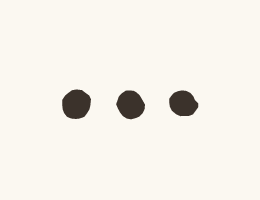
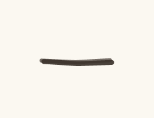
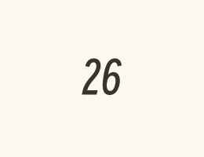
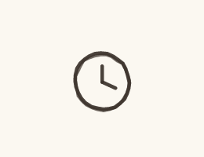
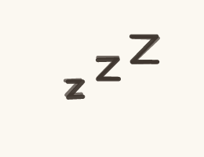
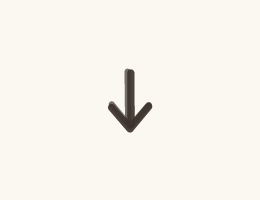
情绪符号十个 它们是画面替观众表态，所以给的是配额不是自由：近 5 条最多 1 条
（收尾卡 endMark 和停顿 line.emote 共用同一份账）。用在停顿里的写法跟上面一样。
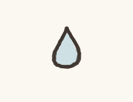
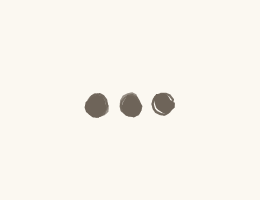
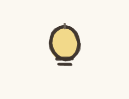
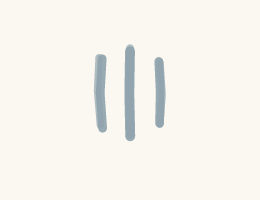
laoma-010
out.mp4 0.0s
0.0s我的单子交上去八天了
 2.6s
2.6s系统里一直显示待审批
 5.4s
5.4s我不知道点那个按钮的人是谁
 8.8s
8.8s我每天早上刷一次，下午再刷一次
 13.2s
13.2s今天九点四十七，七张单子一起通过了
 17.6s
17.6s我这儿也压着一张，压了三天
封面 / 开场 / 定格 / 钩子


落地方案 · 分镜表 · 发布文案方案.md ↗
老马的第 1858 天 落地方案
带AUTO标记的区块由npm run preview从当前配置重新生成，改了会被覆盖。
其余部分随便改，重新生成时原样保留。
一、稿件定位
- 类型 A 类（对话反转，一句 punch 驱动全片）
- 一句话讲什么 他抱怨了九条片子的那套流程，这一条里他自己就是其中一环 ——
而且他在这一环上做的事，跟他抱怨别人做的一模一样。
- 视角 共谋者（horse_standup_plan §六之二 的四档里唯一一次都没用过的那档）。
前九条老马永远是被卡住的人或者旁观的人，干净久了就成了「一个总在被亏待的人」，
那离抱怨只有一步 —— 而抱怨正是 §一 开篇要躲开的东西。
- 为什么这么分镜 一镜到底、镜头不动，只在第 5 句给一次 -12° 扭头。
这一条的转折是视角翻面不是场景变化，切镜会把注意力引到画面上去。
- 不能动的地方
- 第 3 句那个「第九百三十七天」 它跟收尾卡的 1858 是同一条轴上的两个点，
观众自己会算中间那两年半。天数咬合九条里一次都没做过，动了这一条就白搭
- 第 5 句是配额句（emotionLine: 5） 全片唯一一句带情绪的。
加第二句就违规（v3 §2 约束③），删掉它这条片子仍旧成立、只是变冷
- 落点不许挪到第 5 句后面去补一刀 §一之八 说完就停
- opening.style: "voice-first" 物件「按钮」库里没有画法，走不了缺省的档 ③；
别拿 系统 顶替，那张审批单画死了七个节点，那个七是 007 的数
二、分镜表
| 时间 | 画面 | 台词 | 音效 / BGM |
|---|---|---|---|
| 0:00.0–0:00.0 | 开场空镜 场景 office-desk | — | BGM 关 |
| 0:00.0–0:01.7 | 场景 office-desk 在场 ma 单人镜 | ma：我的单子交上去八天了 | — |
| 0:02.6–0:04.5 | 同上 | ma：系统里一直显示待审批 | — |
| 0:05.4–0:07.1 | 同上 | ma：我不知道点那个按钮的人是谁 | — |
| 0:08.8–0:11.4 | 同上 | ma：我每天早上刷一次，下午再刷一次 | — |
| 0:11.5–0:12.4 | 闭目 0.9s 不是眨眼 —— 忍耐 | — | 静音 |
| 0:13.2–0:16.2 | 同上 | ma：今天九点四十七，七张单子一起通过了 | — |
| 0:17.6–0:20.6 | 同上 | ma：我这儿也压着一张，压了三天 | — |
| 0:20.6–0:22.6 | 定格去色 + 钩子字幕「老马的第 1858 天」 | — | BGM 骤停 |
三、场景 / 角色 / 节奏
场景 office-desk
节奏 banter
句内 0.18/0.12s 句间 0.35s 换镜 0.50s
| 角色 | 形象 | 音色 |
|---|---|---|
| ma | horse x=290 | 老马 |
片长 22.55s 6 句 1 个分镜
四、发布文案
发平台时直接抄这一段。
⚠ 2026-08-23 整条换过稿（原来是《我管一个按钮》），这一节跟着重写。
换稿要连 §四 一起换 —— 预览页把标题摆到成片旁边之后一眼看见了：
片子早就是《一直显示待审批》，标题还挂着上一版的「我在那个系统里管一个按钮」。
- 标题候选
1. 我的单子交上去八天了 ←主选
2. 一直显示待审批
3. 我不知道点那个按钮的人是谁
- 为什么是第 1 个 它是第 1 句原话，给处境不给结果：交上去八天了，
观众立刻知道他在等什么，但不知道会怎么样。跟封面大字「一直显示待审批」
是同一件事的两个角度 —— 一个说时间，一个说状态，两边不打架。
第 2 个跟封面大字一模一样，浪费了唯一的视觉资源；
第 3 个是第 3 句，那句是落点的伏笔，抖在标题上会让最后一句的翻面变弱。
- 副标题
老马 · 工位 每天刷两次 - 内容关键词 审批 / 待审批 / 工位 / 打工人 / 流程
- 热度关键词 审批流程 / 走流程 / 职场 / 上班这件事 / 打工人日常
- 话题标签 #职场 #上班这件事
- 简介
> 我的单子交上去八天了，系统里一直显示待审批。
>
> 我不知道点那个按钮的人是谁。
> 每天早上刷一次，下午再刷一次。
- 封面大字
一直显示待审批
五、人工核对
- 每一镜的画面和台词对得上（看 index.html 的场景图）
- 音画同步：配音起点落在字幕窗口内
- 站位：
npm run layout零冲突 - 节奏：句间缓冲听着不赶
- 内容风控
laoma-011
npm run build 0.0s
0.0s这瓶水我拧了四下
 2.4s
2.4s手心印出一圈齿
 4.9s
4.9s老马把瓶子递给小李，小李一下就开了
 9.8s
9.8s小李说这瓶本来就松了
 13.9s
13.9s那瓶水我一口没喝
开场 / 定格 / 钩子


落地方案 · 分镜表 · 发布文案方案.md ↗
老马的第 1861 天 落地方案
带AUTO标记的区块由npm run preview从当前配置重新生成，改了会被覆盖。
其余部分随便改，重新生成时原样保留。
一、稿件定位
- 类型 A 类（对话反转，一句 punch 驱动全片）
- 一句话讲什么 （？）
- 为什么这么分镜 （？把稿件拆成这几镜的依据是什么）
- 不能动的地方 （？哪些参数是刻意调的，动了会破坏什么）
二、分镜表
| 时间 | 画面 | 台词 | 音效 / BGM |
|---|---|---|---|
| 0:00.0–0:00.0 | 开场空镜 场景 office-desk | — | BGM 关 |
| 0:00.0–0:02.0 | 场景 office-desk 在场 ma 单人镜 | ma：这瓶水我拧了四下 | — |
| 0:02.4–0:03.9 | 同上 | ma：手心印出一圈齿 | — |
| 0:04.9–0:08.3 | 同上 | ma：老马把瓶子递给小李，小李一下就开了 | — |
| 0:09.8–0:12.0 | 同上 | ma：小李说这瓶本来就松了 | — |
| 0:13.9–0:15.5 | 同上 | ma：那瓶水我一口没喝 | — |
| 0:15.5–0:17.5 | 定格去色 + 钩子字幕「老马的第 1861 天」 | — | BGM 骤停 |
三、场景 / 角色 / 节奏
场景 office-desk
节奏 banter
句内 0.18/0.12s 句间 0.35s 换镜 0.50s
| 角色 | 形象 | 音色 |
|---|---|---|
| ma | horse x=290 | 老马 |
片长 17.55s 5 句 1 个分镜
四、发布文案
发平台时直接抄这一段。
- 标题候选
1. （？）
2. （？）
3. （？）
- 内容关键词 （？稿件本身讲的是什么，3–6 个）
- 热度关键词 （？观众会搜什么，跟内容沾边的高频词）
- 话题标签 （？#xxx）
- 简介 （？两三句，第一句要能单独立住，列表页只显示第一行）
- 封面大字 ``
五、人工核对
- 每一镜的画面和台词对得上（看 index.html 的场景图）
- 音画同步：配音起点落在字幕窗口内
- 站位：
npm run layout零冲突 - 节奏：句间缓冲听着不赶
- 内容风控
laoma-012
out.mp4 0.0s
0.0s我站在卧室门口，忘了要拿什么
 2.9s
2.9s遥控器在沙发上，电视还开着
 6.0s
6.0s老马原路走回沙发，坐下
 8.6s
8.6s手碰到遥控器的时候，我想起来了
 12.0s
12.0s我没起来，又坐了一会儿
封面 / 开场 / 定格 / 钩子
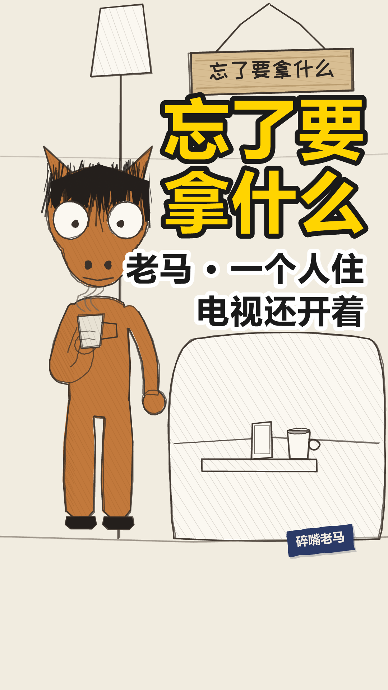


落地方案 · 分镜表 · 发布文案方案.md ↗
老马的第 1863 天 落地方案
带AUTO标记的区块由npm run preview从当前配置重新生成，改了会被覆盖。
其余部分随便改，重新生成时原样保留。
一、稿件定位
- 类型 A 类（对话反转，一句 punch 驱动全片）
- 一句话讲什么 站在卧室门口忘了要拿什么，走回沙发坐下，手碰到遥控器的那一下想起来了 —— 然后他没起来。
- 为什么这么分镜 全片只有一个动作（走回去、坐下），而那个动作发生在台词里、不在画面上。
所以镜头不动、场景不换：画面负责「他一直在那儿」，台词负责「他去了又回来」。
真去分镜表演那一趟，反而把「想起来了也没动」这件事演成了搞笑桥段。
- 不能动的地方
- 第 4 句是配额句（emotionLine: 4）。「手碰到遥控器的时候，我想起来了」是全片唯一一处带情绪的，
v3 §2 一条只给一句，动它就得整条重排
- 落点后不许有话。「我没起来，又坐了一会儿」说完就停 —— 加半句解释这条就废了
- 没有落点符号、没有尾卡，两处都是有意留空：配额句已经用掉了那一次力（尾卡跟配额二选一），
而上一条 1858 刚用过省略号，连着两条挂符号就开始像模板
- 首帧走档 ③（物件特写「遥控器」）。这条的物件在库里有画法，是档 ③ 成立的前提
二、分镜表
| 时间 | 画面 | 台词 | 音效 / BGM |
|---|---|---|---|
| 0:00.0–0:00.0 | 开场空镜 场景 rental-living | — | BGM 关 |
| 0:00.0–0:02.5 | 场景 rental-living 在场 ma 单人镜 | ma：我站在卧室门口，忘了要拿什么 | — |
| 0:02.9–0:05.6 | 同上 | ma：遥控器在沙发上，电视还开着 | — |
| 0:06.0–0:08.2 | 同上 | ma：老马原路走回沙发，坐下 | — |
| 0:08.6–0:11.2 | 同上 | ma：手碰到遥控器的时候，我想起来了 | — |
| 0:12.0–0:14.1 | 同上 | ma：我没起来，又坐了一会儿 | — |
| 0:14.4–0:16.4 | 定格去色 + 钩子字幕「老马的第 1863 天」 | — | BGM 骤停 |
三、场景 / 角色 / 节奏
场景 rental-living
节奏 banter
句内 0.18/0.12s 句间 0.35s 换镜 0.50s
| 角色 | 形象 | 音色 |
|---|---|---|
| ma | horse x=290 | 老马 |
片长 16.38s 5 句 1 个分镜
四、发布文案
发平台时直接抄这一段。
- 标题候选
1. 我站在卧室门口，忘了要拿什么 ←主选 第一句原样搬，不剧透落点
2. 走回沙发那一下，我想起来了 ← 泄了第 4 句那一拍，落点就没落差了
3. 一个人住久了会这样 ← 犯了「替观众下判断」，v3 硬禁令一。留着当反例
- 内容关键词 忘事 / 遥控器 / 一个人住 / 沙发 / 走回去
- 热度关键词 脑子空白 / 站在门口忘了 / 下班回家 / 独居日常
- 话题标签 #老马 #一个人住 #忘了要拿什么
- 简介
> 我站在卧室门口，忘了要拿什么。
>
> 遥控器在沙发上，电视还开着。
> 老马原路走回沙发，坐下。
- 封面大字
忘了要拿什么6 字，同时是幕布闭幕那半秒打在布面上的标题（闭幕帧就是封面）
五、人工核对
- 每一镜的画面和台词对得上（看 index.html 的场景图）
- 音画同步：配音起点落在字幕窗口内
- 站位：
npm run layout零冲突 - 节奏：句间缓冲听着不赶
- 内容风控
laoma-013
npm run build 0.0s
0.0s出地铁的时候，手机剩百分之三
 4.2s
4.2s到家还有十三分钟的路
 7.5s
7.5s老马把亮度调到最低，手机塞进兜里
 12.2s
12.2s我没有要看的东西
 15.4s
15.4s剩下那十三分钟，我一直在算它还能撑多久
开场 / 定格 / 钩子


落地方案 · 分镜表 · 发布文案方案.md ↗
老马的第 1866 天 落地方案
带AUTO标记的区块由npm run preview从当前配置重新生成，改了会被覆盖。
其余部分随便改，重新生成时原样保留。
一、稿件定位
- 类型 A 类（对话反转，一句 punch 驱动全片）
- 一句话讲什么 （？）
- 为什么这么分镜 （？把稿件拆成这几镜的依据是什么）
- 不能动的地方 （？哪些参数是刻意调的，动了会破坏什么）
二、分镜表
| 时间 | 画面 | 台词 | 音效 / BGM |
|---|---|---|---|
| 0:00.0–0:00.0 | 开场空镜 场景 subway | — | BGM 关 |
| 0:00.0–0:00.0 | 场景 subway 在场 ma 单人镜 | ma：出地铁的时候，手机剩百分之三 | — |
| 0:04.2–0:04.2 | 同上 | ma：到家还有十三分钟的路 | — |
| 0:07.5–0:07.5 | 同上 | ma：老马把亮度调到最低，手机塞进兜里 | — |
| 0:12.2–0:12.2 | 同上 | ma：我没有要看的东西 | — |
| 0:15.4–0:15.4 | 同上 | ma：剩下那十三分钟，我一直在算它还能撑多久 | — |
| 0:20.6–0:22.6 | 定格去色 + 钩子字幕「老马的第 1866 天」 | — | BGM 骤停 |
三、场景 / 角色 / 节奏
场景 subway
节奏 banter
句内 0.18/0.12s 句间 0.35s 换镜 0.50s
| 角色 | 形象 | 音色 |
|---|---|---|
| ma | horse x=290 | 老马 |
片长 22.59s 5 句 1 个分镜
四、发布文案
发平台时直接抄这一段。
- 标题候选
1. （？）
2. （？）
3. （？）
- 内容关键词 （？稿件本身讲的是什么，3–6 个）
- 热度关键词 （？观众会搜什么，跟内容沾边的高频词）
- 话题标签 （？#xxx）
- 简介 （？两三句，第一句要能单独立住，列表页只显示第一行）
- 封面大字 ``
五、人工核对
- 每一镜的画面和台词对得上（看 index.html 的场景图）
- 音画同步：配音起点落在字幕窗口内
- 站位：
npm run layout零冲突 - 节奏：句间缓冲听着不赶
- 内容风控
laoma-014
npm run build 0.0s
0.0s一个小时的会，每个词我都听懂了
 4.4s
4.4s散会的时候我不知道定了没有
 8.4s
8.4s老马夹着笔记本跟出去，等了三步才开口
 13.5s
13.5s同事说，大概是那个方向吧
 17.6s
17.6s我回工位翻笔记，上面写的就是这句
开场 / 定格 / 钩子


落地方案 · 分镜表 · 发布文案方案.md ↗
老马的第 1868 天 落地方案
带AUTO标记的区块由npm run preview从当前配置重新生成，改了会被覆盖。
其余部分随便改，重新生成时原样保留。
一、稿件定位
- 类型 A 类（对话反转，一句 punch 驱动全片）
- 一句话讲什么 （？）
- 为什么这么分镜 （？把稿件拆成这几镜的依据是什么）
- 不能动的地方 （？哪些参数是刻意调的，动了会破坏什么）
二、分镜表
| 时间 | 画面 | 台词 | 音效 / BGM |
|---|---|---|---|
| 0:00.0–0:00.0 | 开场空镜 场景 meeting-room | — | BGM 关 |
| 0:00.0–0:00.0 | 场景 meeting-room 在场 ma 单人镜 | ma：一个小时的会，每个词我都听懂了 | — |
| 0:04.4–0:04.4 | 同上 | ma：散会的时候我不知道定了没有 | — |
| 0:08.4–0:08.4 | 同上 | ma：老马夹着笔记本跟出去，等了三步才开口 | — |
| 0:13.5–0:13.5 | 同上 | ma：同事说，大概是那个方向吧 | — |
| 0:17.6–0:17.6 | 同上 | ma：我回工位翻笔记，上面写的就是这句 | — |
| 0:22.1–0:24.1 | 定格去色 + 钩子字幕「老马的第 1868 天」 | — | BGM 骤停 |
三、场景 / 角色 / 节奏
场景 meeting-room
节奏 banter
句内 0.18/0.12s 句间 0.35s 换镜 0.50s
| 角色 | 形象 | 音色 |
|---|---|---|
| ma | horse x=290 | 老马 |
片长 24.13s 5 句 1 个分镜
四、发布文案
发平台时直接抄这一段。
- 标题候选
1. （？）
2. （？）
3. （？）
- 内容关键词 （？稿件本身讲的是什么，3–6 个）
- 热度关键词 （？观众会搜什么，跟内容沾边的高频词）
- 话题标签 （？#xxx）
- 简介 （？两三句，第一句要能单独立住，列表页只显示第一行）
- 封面大字 ``
五、人工核对
- 每一镜的画面和台词对得上（看 index.html 的场景图）
- 音画同步：配音起点落在字幕窗口内
- 站位：
npm run layout零冲突 - 节奏：句间缓冲听着不赶
- 内容风控
laoma-015
out.mp4 0.0s
0.0s视频接通，屏幕上是我妈的半张脸
 3.9s
3.9s我说往后一点，她把手机举得更近了
 7.9s
7.9s我把自己的手机往后挪，想让她照着做
 12.8s
12.8s她说你那边怎么黑了
 16.3s
16.3s那通电话打了二十六分钟，我没看清她
封面 / 开场 / 定格 / 钩子
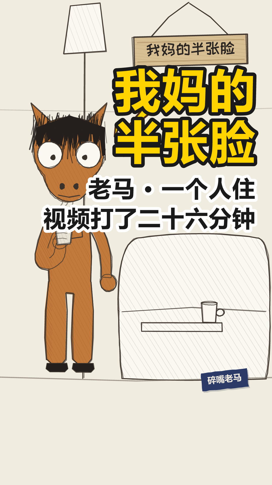


落地方案 · 分镜表 · 发布文案方案.md ↗
老马的第 1871 天 落地方案
带AUTO标记的区块由npm run preview从当前配置重新生成，改了会被覆盖。
其余部分随便改，重新生成时原样保留。
一、稿件定位
- 类型 A 类（对话反转，一句 punch 驱动全片）
- 一句话讲什么 跟我妈视频，我说往后一点，她把手机举得更近；我把自己的手机往后挪想让她照做，她说「你那边怎么黑了」。二十六分钟，我没看清她。
- 为什么这么分镜 全片只有一个动作（两个人各自挪手机），而两边都在照着自己那头的逻辑动。
镜头不动、单场景：画面负责「他一直坐在那儿」，台词负责那两只手在屏幕外各挪各的。
真去演视频通话的两头，就成了双人小品 —— 这条线的规矩是一个人说到底。
- 不能动的地方
- 落点是纯事实：一个数（二十六分钟）＋ 一件没做成的事（没看清）。不许加一句感慨
- 配额句点在落点上（emotionLine: 5），用户明确要留
- 同时挂尾卡（allowBoth: true）——「二选一」那条是知情地破的，理由记在稿件 _allowBoth 里
- 首帧走档 ③（物件特写「手机」），库里有画法
二、分镜表
| 时间 | 画面 | 台词 | 音效 / BGM |
|---|---|---|---|
| 0:00.0–0:00.0 | 开场空镜 场景 rental-living | — | BGM 关 |
| 0:00.0–0:03.7 | 场景 rental-living 在场 ma 单人镜 | ma：视频接通，屏幕上是我妈的半张脸 | — |
| 0:03.9–0:06.3 | 同上 | ma：我说往后一点，她把手机举得更近了 | — |
| 0:07.9–0:10.7 | 同上 | ma：我把自己的手机往后挪，想让她照着做 | — |
| 0:12.8–0:14.7 | 同上 | ma：她说你那边怎么黑了 | — |
| 0:16.3–0:20.4 | 同上 | ma：那通电话打了二十六分钟，我没看清她 | — |
| 0:20.4–0:22.4 | 定格去色 + 钩子字幕「老马的第 1871 天」 | — | BGM 骤停 |
三、场景 / 角色 / 节奏
场景 rental-living
节奏 banter
句内 0.18/0.12s 句间 0.35s 换镜 0.50s
| 角色 | 形象 | 音色 |
|---|---|---|
| ma | horse x=290 | 老马 |
片长 22.38s 5 句 1 个分镜
四、发布文案
发平台时直接抄这一段。
- 标题候选
1. 我说往后一点，她把手机举得更近了 ←主选 第 2 句原样搬，一句话把两头的错位摆出来
2. 跟我妈视频，二十六分钟没看清她 ← 把落点的数和结果都说了，等于剧透
3. 爸妈的视频通话为什么总是半张脸 ← 「为什么」是在替观众提问，也滑向科普腔
- 内容关键词 视频通话 / 我妈 / 半张脸 / 举得更近 / 二十六分钟
- 热度关键词 跟爸妈视频 / 老人用手机 / 视频只有半张脸 / 异地
- 话题标签 #老马 #一个人住 #跟爸妈视频
- 简介
> 视频接通，屏幕上是我妈的半张脸。
>
> 我说往后一点，她把手机举得更近了。
> 我把自己的手机往后挪，想让她照着做。
- 封面大字
我妈的半张脸6 字，同时是幕布闭幕那半秒打在布面上的标题
五、人工核对
- 每一镜的画面和台词对得上（看 index.html 的场景图）
- 音画同步：配音起点落在字幕窗口内
- 站位：
npm run layout零冲突 - 节奏：句间缓冲听着不赶
- 内容风控
laoma-016
out.mp4 0.0s
0.0s三舅问我一个月拿多少
 2.6s
2.6s我说还行
 4.4s
4.4s我端起杯子喝了一口
 6.0s
6.0s杯子是空的
 8.0s
8.0s三舅点点头说，还行就是不多
 11.9s
11.9s一桌子人都在夹菜，没人接话
 15.9s
15.9s我又端起杯子喝了一口
封面 / 开场 / 定格 / 钩子
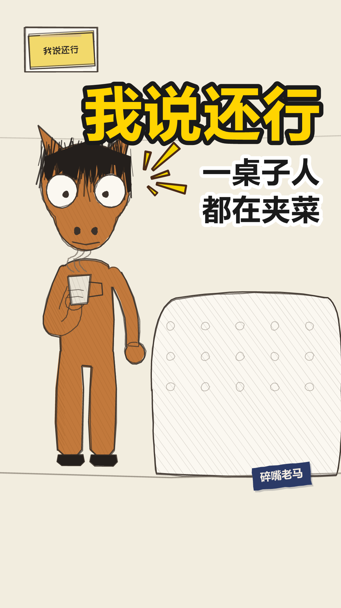


落地方案 · 分镜表 · 发布文案方案.md ↗
老马的第 1874 天 落地方案
带AUTO标记的区块由npm run preview从当前配置重新生成，改了会被覆盖。
其余部分随便改，重新生成时原样保留。
一、稿件定位
- 类型 A 类（对话反转，一句 punch 驱动全片）
- 一句话讲什么 三舅一句「还行就是不多」把他那句躲闪翻译了一遍，桌上没人接话，他只能再端一次空杯子——杯子是他唯一的挡箭牌，而它是空的。
- 为什么这么分镜 一个人一镜到底，节拍全在停顿上。三处长停顿各有各的活：空杯子那一下 1.7 秒（钩子要沉下去）／没人接话 1.3 秒（冷场，闭目就塞在这儿）／落点前 0.45 秒。
- 不能动的地方
- 第 3 句的两小句必须一句一屏：「杯子是空的」要单独占一屏，跟前半句挤在一起就没有那个空。
- 闭目 0.9 秒（第 5 句）：全片唯一一次，靠那 1.3 秒的停顿才塞得下；padAfter 调小就会咬进下一句。
- 扭头 −13°（第 4 句）：话锋转了的那一句，也是全片唯一一次。
- 第 6 句是同一个动作再做一遍——观众这时已经知道杯子是空的，删了它落点那个「四回」就没地方数。
- 落点报数不报感受，emotionLine 空着是有意的。
二、分镜表
| 时间 | 画面 | 台词 | 音效 / BGM |
|---|---|---|---|
| 0:00.0–0:00.0 | 开场空镜 场景 home-living | — | BGM 关 |
| 0:00.0–0:02.0 | 场景 home-living 在场 ma 单人镜 | ma：三舅问我一个月拿多少 | — |
| 0:02.6–0:03.4 | 同上 答得越短越好——「还行」是这条片子全部的躲闪。 | ma：我说还行 | — |
| 0:04.4–0:05.6 | 同上 钩子埋在这儿：杯子第一次出现，落点要拿它结账。 | ma：我端起杯子喝了一口 | — |
| 0:06.0–0:07.0 | 同上 无声字幕：这一句他不说，只上字，1.0 秒。字和省略号一起浮出来——字卡是事实，省略号是他对这个事实的反应，同一张卡上的两件东西。全片唯一一次无声字幕。 | 无声字幕 1s 杯子是空的 只上字，不出声 | — |
| 0:08.0–0:10.8 | 同上 转折：三舅替他把「还行」翻译了一遍。「点点头」是新加的——他不是在质问，是在确认，这比质问难受。 | ma：三舅点点头说，还行就是不多 | — |
| 0:11.9–0:14.3 | 同上 新加的一拍：冷场。这一停要有图——闭目 0.9 ＋ 一滴冷汗，尴尬那一下画面上得看得见，光靠一张不动的脸撑不住。 | ma：一桌子人都在夹菜，没人接话 | — |
| 0:14.3–0:15.2 | 闭目 0.9s 不是眨眼 —— 忍耐 | — | 静音 |
| 0:15.9–0:17.7 | 同上 落点：同一个动作再做一遍。观众这时已经知道杯子是空的，所以这一口是他自己找的台阶——数字留给尾卡去报。 | ma：我又端起杯子喝了一口 | — |
| 0:17.7–0:19.7 | 定格去色 + 钩子字幕「老马的第 1874 天」 | — | BGM 骤停 |
三、场景 / 角色 / 节奏
场景 home-living
节奏 banter
句内 0.18/0.12s 句间 0.35s 换镜 0.50s
| 角色 | 形象 | 音色 |
|---|---|---|
| ma | horse x=290 | 老马 |
片长 19.68s 7 句 1 个分镜
四、发布文案
发平台时直接抄这一段。
- 标题候选
1. 三舅问我一个月拿多少，我说还行 ←主选
2. 那天我喝了四回空杯子
3. 还行就是不多
- 内容关键词 过年 / 亲戚 / 收入 / 饭桌 / 空杯子
- 热度关键词 过年回家 / 亲戚问工资 / 家庭聚餐 / 打工人
- 话题标签 #过年回家 #亲戚 #饭桌
- 简介
> 三舅问我一个月拿多少。我说还行。
>
> 我端起杯子喝了一口，杯子是空的。
> 三舅点点头说，还行就是不多。
- 封面大字 ``
五、人工核对
- 每一镜的画面和台词对得上（看 index.html 的场景图）
- 音画同步：配音起点落在字幕窗口内
- 站位：
npm run layout零冲突 - 节奏：句间缓冲听着不赶
- 内容风控
laoma-019
out.mp4 0.0s
0.0s公司让我们用 AI 提效
 2.6s
2.6s我用 AI 写周报，它写得比我认真
 6.2s
6.2s领导用 AI 读周报，读完回我一句辛苦了
 10.3s
10.3s那份周报从头到尾，没有一个人看过
 14.1s
14.1s我学了三个提示词技巧，学完发现新版本不用这么写了
 18.8s
18.8s我不是不学。我是学得比它更新得慢
 22.9s
22.9s不过这样也挺好，至少我知道，那周报不是我写的
封面 / 开场 / 定格 / 钩子
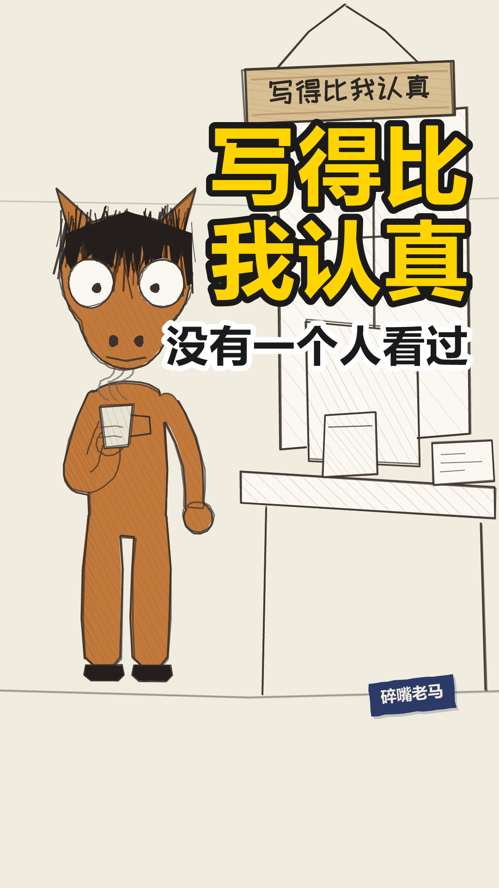


落地方案 · 分镜表 · 发布文案方案.md ↗
laoma-019 落地方案
带AUTO标记的区块由npm run preview从当前配置重新生成，改了会被覆盖。
其余部分随便改，重新生成时原样保留。
一、稿件定位
- 类型 A 类（管线上的时间轴结构）／体裁：累积式（
format: "cumulative"） - 一句话讲什么 公司要求用 AI 提效，他照做了，对面也照做了，两头都提了效，中间那份周报没有一个人看过；最后他连「我在偷懒」都不认领，只说那周报不是他写的。
- 为什么这么分镜 一个人从头说到尾，不切镜。节拍全交给字幕分屏和两处「留一拍」——第 4 句（支点，也是全片唯一把话说到底的一句）和第 6 句（沉底前那一拍）。
- 不能动的地方
- 第 4 句的 beatPause ＋ 闭目 0.9 秒：全片唯一一次闭目，读作认命不是眨眼。「没有一个人看过」说完不留这一拍，它就只是一句陈述。
- 第 6 句两小句用句号不用逗号：「我不是不学。我是学得比它更新得慢。」——转折要顿得实（用语规范 §1.2），并成一句就成了辩解。
- 落点第 1 屏逐字「不过这样也挺好」，gap: 0.5 是给那一拍腾的位置。
- 视角是共谋者：老马自己就是那个不写周报的人。改成「我看见同事用 AI」就退回旁观者档，前 18 条已经全是那个姿势了（§六之二.1）。
- 不出收尾卡、不带日子牌：累积式不占老马那条时间轴。
二、分镜表
| 时间 | 画面 | 台词 | 音效 / BGM |
|---|---|---|---|
| 0:00.0–0:00.0 | 开场空镜 场景 office-desk | — | BGM 关 |
| 0:00.0–0:02.2 | 场景 office-desk 在场 ma 单人镜立：把制度摆出来。这一句是公司的原话，不是老马的判断 —— 他只是复述，判断留给后面五层自己长出来。 | ma：公司让我们用 AI 提效 | — |
| 0:02.6–0:05.8 | 同上 拆：提效的第一层落地。「它写得比我认真」——认真是给人看的词，用在 AI 身上就是错位。两小句一句一屏。 | ma：我用 AI 写周报，它写得比我认真 | — |
| 0:06.2–0:09.9 | 同上 累积①：另一头也换成了 AI。「辛苦了」三个字是全片第一个空转的信号。钩子埋在这儿 —— 「周报」在落点结账。 | ma：领导用 AI 读周报，读完回我一句辛苦了 | — |
| 0:10.3–0:12.9 | 同上 累积②：全片的支点，也是唯一一句把话说到底的。前两层各自成立，合起来才是这一句。说完留一拍 ＋ 闭目 0.9 —— 全片唯一一次闭目，读作认命，不是眨眼（照 018 的用法）。 | ma：那份周报从头到尾，没有一个人看过 | — |
| 0:13.0–0:13.9 | 闭目 0.9s 不是眨眼 —— 忍耐 | — | 静音 |
| 0:14.1–0:18.4 | 同上 累积③：从「写」换到「学」，同一个机制换个地方再来一次。「三个」是不圆的具体数（§一之十六）。 | ma：我学了三个提示词技巧，学完发现新版本不用这么写了 | — |
| 0:18.8–0:21.4 | 同上 话锋转了：前面全是事，这一句是他对自己的交代。认输句不是判断句（用语规范 §7.3）——「我不是不学」先挡掉一个误会，「我是学得比它更新得慢」是承认，不是给自己下定义。转折用句号不用逗号（§1.2），两小句两屏。全片唯一一次扭头。说完留一拍，给沉底句助跑。 | ma：我不是不学。我是学得比它更新得慢 | — |
| 0:22.9–0:27.2 | 同上 沉底：往下沉半寸，不往上扬。签名屏「不过这样也挺好」自成一屏、停一拍，再落到「那周报不是我写的」——「周报」在这儿结账。⚠ 落点不是庆幸，是把功劳一起推掉：连那点认真都不是他的。 | ma：不过这样也挺好，至少我知道，那周报不是我写的 | — |
| 0:27.5–0:29.5 | 定格去色 不出收尾卡 | — | BGM 骤停 |
三、场景 / 角色 / 节奏
场景 office-desk
节奏 standup-fast
句内 0.25/0.15s 句间 0.40s 换镜 0.90s
| 角色 | 形象 | 音色 |
|---|---|---|
| ma | horse x=290 | 老马 |
片长 29.54s 7 句 1 个分镜
四、发布文案
发平台时直接抄这一段。
- 标题候选
1. 我用 AI 写周报，领导用 AI 读周报 ←主选
2. 那份周报从头到尾没有一个人看过
3. 我不是不学，我是学得比它更新得慢
- 内容关键词 AI / 周报 / 提效 / 提示词 / 领导
- 热度关键词 职场 / 打工人 / AI办公 / 周报 / 形式主义
- 话题标签 #AI提效 #周报 #职场日常
- 简介
> 公司让我们用 AI 提效。我用 AI 写周报，它写得比我认真。
>
> 领导用 AI 读周报，读完回我一句辛苦了。
> 那份周报从头到尾，没有一个人看过。
- 封面大字
写得比我认真
五、人工核对
- 每一镜的画面和台词对得上（看 index.html 的场景图）
- 音画同步：配音起点落在字幕窗口内
- 站位：
npm run layout零冲突 - 节奏：句间缓冲听着不赶
- 内容风控
laoma-001
out.mp4 1.3s
1.3s我们组的群里，最恐怖的两个字是收到
 5.1s
5.1s领导发一段话，十七个人排队回收到
 8.6s
8.6s你回晚了，显得不积极。你回早了，显得没看完
 13.6s
13.6s我练了三年，找到了最佳位置，第三个
 17.4s
17.4s第一个像拍马屁，最后一个像敷衍，第三个刚好像是认真读完的
 24.2s
24.2s至于内容，我一个字没看
封面 / 开场 / 定格 / 钩子


落地方案 · 分镜表 · 发布文案方案.md ↗
老马，今天也没辞职。 落地方案
带AUTO标记的区块由npm run preview从当前配置重新生成，改了会被覆盖。
其余部分随便改，重新生成时原样保留。
一、稿件定位
- 类型 A 类（对话反转，一句 punch 驱动全片）
- 一句话讲什么 群里回「收到」是有位置讲究的，他为此练了三年；至于内容，一个字没看。
- 为什么这么分镜
钩子 → 三个铺垫 → 转折 → 揭晓 → 落点，六句。
关键是揭晓和落点是分开的两句，中间停 0.55 秒：
原来它们是一句 41 字的长台词，laoma-check 报「落点句上限 15 字，超了 2.7 倍」。
更要命的是侧边字幕会把整句一次性排出来 —— 观众读完「我一个字没看」才听到他念，
包袱在字幕上先炸了一次，声音到的时候已经是复述（SCRIPT_GUIDE §五）。
拆开之后落点 12 字、单独一屏，两个问题一起解决。
「揭晓」不是落点：它还在解释规律，观众听到那儿只是「哦原来如此」。
真正的落点是把前面三年的功夫一句话全部作废。
- 不能动的地方
- camera: "static" —— 镜头一动，这条线「一个人站着讲」的质感就散了。
跟随是给对话类定的，这儿没有第二个人可跟
- cues 四个音效全关 —— 尤其定格那声「咚」，它等于自己先敲了一下锣
- 落点前那 0.55 秒 —— §四 写着「转折前那半秒是全片最重要的半秒」，
观众在这半秒里自己预判，然后被落点打掉。压缩它等于把包袱的助跑砍了
- 表情弧 心虚 → 不屑 → 笑眯眯 →（定格）瞪＋大汗 ——
前面 25 秒面无表情是为这一下攒的，中间任何一处提前做表情都会泄掉
- 封面 cam: zoom 1.0 —— 构图本身是内容（人在左三分之一、字在右半幅），
推近就只剩半张脸
二、分镜表
| 时间 | 画面 | 台词 | 音效 / BGM |
|---|---|---|---|
| 0:00.0–0:01.2 | 开场空镜 场景 office-desk | — | BGM 关 |
| 0:01.3–0:04.6 | 场景 office-desk 在场 ma 单人镜 | ma：我们组的群里，最恐怖的两个字是收到 | — |
| 0:05.1–0:08.3 | 同上 | ma：领导发一段话，十七个人排队回收到 | — |
| 0:08.6–0:12.6 | 同上 | ma：你回晚了，显得不积极。你回早了，显得没看完 | — |
| 0:12.6–0:13.4 | 闭目 0.8s 不是眨眼 —— 忍耐 | — | 静音 |
| 0:13.6–0:16.8 | 同上 扭头一次：话锋转了。§四 一条最多两次 | ma：我练了三年，找到了最佳位置，第三个 | — |
| 0:17.4–0:23.5 | 同上 | ma：第一个像拍马屁，最后一个像敷衍，第三个刚好像是认真读完的 | — |
| 0:24.2–0:26.8 | 同上 | ma：至于内容，我一个字没看 | — |
| 0:26.8–0:28.8 | 定格去色 + 钩子字幕「老马的第 1847 天」 | — | BGM 骤停 |
三、场景 / 角色 / 节奏
场景 office-desk
节奏 banter
句内 0.18/0.12s 句间 0.35s 换镜 0.50s
| 角色 | 形象 | 音色 |
|---|---|---|
| ma | horse x=290 | 老马 |
片长 28.78s 6 句 1 个分镜
四、发布文案
发平台时直接抄这一段。
- 标题候选
1. 回「收到」，我练了三年 ←主选
2. 我练了三年，就为了回两个字
3. 回「收到」的技巧，我练了三年
原来的主选是「我回消息的位置，是练过的」，换掉了。 它生硬，
而毛病不在少一个招人的词 —— 在「位置」是个抽象概念，读者得在脑子里翻译一道。
这条片子手里最有力的东西全是具体的：三年、两个字、第三个。抽象换具体就不硬了。
选 1 的理由：
- 「收到」摆在第一个字上。职场/群聊人群的强命中词，推荐系统抓关键词时吃得到；
「回消息的位置」一个命中词都没有
- 「练了三年」自带荒唐感，而且是事实陈述不是形容词（§一之四：具体压倒抽象）
- 10 字，竖屏一行不折行
- 落点没剧透。简介同理，写到「找到了最佳位置」为止
2 的数量级反差最狠（三年 vs 两个字），但标题里没有「收到」「群」这些命中词，
推荐系统抓关键词时吃亏。3 用了「技巧」——这不算热词
（体检的热词表是「绝绝子 / yyds / 摆烂」那一档），
但「技巧」是利益承诺，而正文最后一句是「我一个字没看」，等于把教程掀翻：
这是包袱，也可能被读成标题党。
三条都是陈述句、没有感叹号、没有热词——老马不用那种话说事（人设禁忌）。
「敲门砖」那个方向没做：「回收到是职场敲门砖」是总结句，
一总结就成了评论，而这条线的全部力气都花在「只陈述，判断留给你」上。
- 副标题
老马 · 工位 不愤怒，只是看得比谁都清楚 - 内容关键词 职场 / 群聊 / 回消息 / 收到 / 打工人
- 热度关键词 职场 / 打工人日常 / 微信群 / 办公室 / 社畜
- 话题标签 #老马 #职场 #打工人日常 #群聊
- 简介
> 我们组的群里，最恐怖的两个字是收到。
>
> 领导发一段话，十七个人排队回。回晚了显得不积极，回早了显得没看完。
> 我练了三年，找到了最佳位置。
简介到「找到了最佳位置」为止，不许往下写。 落点（「至于内容，我一个字没看」）
是这条片子唯一的包袱，写进简介就是自己先剧透 ——
列表页那一行的任务是让人点开，不是让人看完。
- 封面大字
练了三年
原来是「收到」，出封面时体检报了「大字只有 2 字，太短撑不住画面（建议 4–8 字）」。
换成「练了三年」还顺带跟标题对齐了 —— 标题、封面大字、收尾金句是同一个钩子的三种长度，
分开想必然对不齐。
五、人工核对
- 每一镜的画面和台词对得上（看 index.html 的场景图）
- 音画同步：配音起点落在字幕窗口内
- 站位：
npm run layout零冲突 - 节奏：句间缓冲听着不赶
- 内容风控
laoma-002
out.mp4 1.3s
1.3s我妈每天给我发天气预报
 3.4s
3.4s不是转发的那种，是她自己一个字一个字打的
 6.8s
6.8s明天降温，加衣服。有雨，带伞。风大，别骑车
 13.1s
13.1s我住的这个城市她没来过，但她每天都知道那儿几度
 18.0s
18.0s有一次我跟她说，妈，手机上都有
 21.6s
21.6s她说，我知道啊
 25.0s
25.0s第二天，她还是发了
封面 / 开场 / 定格 / 钩子


落地方案 · 分镜表 · 发布文案方案.md ↗
laoma-002 落地方案
带AUTO标记的区块由npm run preview从当前配置重新生成，改了会被覆盖。
其余部分随便改，重新生成时原样保留。
一、稿件定位
- 类型 A 类（对话反转，一句 punch 驱动全片）
- 一句话讲什么 我妈每天一个字一个字手打天气预报发给我；我说手机上都有，她说她知道，第二天照发。
- 为什么这么分镜
钩子 → 三条原话 → 距离 → 转折（扭头）→ 她的回答 → 张嘴无声 → 落点，七句。
这条稿子跟稿 1 是两种东西：稿 1 是段子，靠一句 punch 把前面全部作废；
这条没有可笑的地方，靠的是「拦不住」。所以结构也不一样 ——
- 铺垫必须是妈妈的原话（明天降温加衣服 / 有雨带伞 / 风大别骑车）。
复述成「她会提醒我加衣服」就完了：原话是证据，复述是评论，
而这条片子一旦开始评论就变成朋友圈鸡汤
- 三条是递进的：加衣服 → 带伞 → 别骑车，一条比一条管得宽。
§一之二 要三个例子，两个认不出规律，四个开始不耐烦
- 落点前那 1.6 秒是全片的核心，见下
- 不能动的地方
- openMouth: 1.6 —— 她说「我知道啊」，他张嘴想反驳，没话说。
前面二十多秒观众已经学会「嘴在动＝有话」，这一下嘴动了没声音，那个空是响的。
方案 §六 原话：「它把口型开但不出声用成了叙事手段 —— 画面的限制反过来变成了表达」。
这条片子就是为这 1.6 秒存在的，压缩它等于把片子拆了
- 没有收尾卡，黑场收（fadeOut: 1.4，不写 hook）。
固定收尾「老马，今天也没辞职。」是段子的 CTA，往这条后面一贴
就成了「刚才那是个段子」—— 而它不是
- 不垫 BGM。 这条稿子最容易犯的错就是垫一段温情钢琴，
那等于替观众定调，而这条线全部的力气都花在「只陈述，判断留给你」上
- 一个漫符都不放，也不挂说话放射。 黄色尖刺是喜剧记号；
符号是画面在替观众下判断 —— 这条片子最忌讳的就是替观众判断
- 落点 9 字，说完就完。 不解释、不总结、后面不再有话
- 定格是闭眼（endPose.eyes: "closed"）。全片唯一一次闭目，
§五：超过 0.5 秒的闭眼读作「忍耐/认命」，很重，所以只能有一次
二、分镜表
| 时间 | 画面 | 台词 | 音效 / BGM |
|---|---|---|---|
| 0:00.0–0:01.2 | 开场空镜 场景 street-night | — | BGM 关 |
| 0:01.3–0:02.9 | 场景 street-night 在场 ma 单人镜 | ma：我妈每天给我发天气预报 | — |
| 0:03.4–0:06.5 | 同上 | ma：不是转发的那种，是她自己一个字一个字打的 | — |
| 0:06.8–0:12.7 | 同上 | ma：明天降温，加衣服。有雨，带伞。风大，别骑车 | — |
| 0:13.1–0:17.4 | 同上 | ma：我住的这个城市她没来过，但她每天都知道那儿几度 | — |
| 0:18.0–0:21.1 | 同上 | ma：有一次我跟她说，妈，手机上都有 | — |
| 0:21.6–0:23.1 | 同上 | ma：她说，我知道啊 | — |
| 0:23.2–0:24.8 | 张嘴，不出声 1.6s 他想说什么，说不出来 | — | 静音 |
| 0:25.0–0:27.1 | 同上 | ma：第二天，她还是发了 | — |
| 0:27.1–0:29.1 | 定格去色 + 黑场 1.4s 不出收尾卡 | — | BGM 骤停 |
三、场景 / 角色 / 节奏
场景 street-night
节奏 banter
句内 0.18/0.12s 句间 0.35s 换镜 0.50s
| 角色 | 形象 | 音色 |
|---|---|---|
| ma | horse x=290 | 老马 |
片长 29.09s 7 句 1 个分镜
四、发布文案
发平台时直接抄这一段。
- 标题候选
1. 我妈每天给我发天气预报 ←主选
2. 我说手机上都有，她说我知道啊
3. 她没来过我这座城，却天天知道几度
选 1 的理由：「回家」这个栏目靠共鸣，不靠悬念。
转发的动机是「这就是我妈」，不是「我想知道结局」——
所以标题要让人一眼认出自己家那位，而不是抛个谜。
- 「妈」「天气预报」都是强命中词，而且是具体的东西，不是「关心」这种形容（§一之四）
- 11 字，竖屏一行不折行
- 落点（第二天她还是发了）没剧透
2 把转折整个放出来了，钩子更强，但它是一句对白，得读两遍才知道谁在说话；
3 最像文案，也最不像老马 —— 「却天天知道几度」是在替观众感慨，
而这条线的全部力气都花在不感慨上。
- 副标题
老马 · 回家 不愤怒，只是看得比谁都清楚 - 内容关键词 妈妈 / 天气预报 / 异地 / 家人 / 微信
- 热度关键词 妈妈 / 父母 / 异地 / 想家 / 亲情 / 打工人
- 话题标签 #老马 #回家 #妈妈 #异地 #家人
- 简介
> 我妈每天给我发天气预报。
>
> 不是转发的那种，是她自己一个字一个字打的。
> 明天降温加衣服，有雨带伞，风大别骑车。
> 我住的这个城市她没来过，但她每天都知道那儿几度。
写到「那儿几度」为止，不许往下写。 转折（妈，手机上都有）和落点
（第二天她还是发了）是这条片子仅有的两下，写进简介就是自己先剧透 ——
列表页那一行的任务是让人点开，不是让人看完。
- 封面大字
我妈的天气预报
五、人工核对
- 每一镜的画面和台词对得上（看 index.html 的场景图）
- 音画同步：配音起点落在字幕窗口内
- 站位：
npm run layout零冲突 - 节奏：句间缓冲听着不赶
- 内容风控
laoma-003
out.mp4 1.3s
1.3s电梯里最难的不是尴尬，是决定看哪儿
 5.0s
5.0s看人不礼貌
 6.3s
6.3s看地上像有心事
 8.2s
8.2s看手机显得不合群，虽然大家都在看手机
 12.5s
12.5s所以我们发明了一个方向，一个共同的
 16.4s
16.4s七个人，看同一个不会变快的数字
封面 / 开场 / 定格 / 钩子


落地方案 · 分镜表 · 发布文案方案.md ↗
老马，今天也没辞职。 落地方案
带AUTO标记的区块由npm run preview从当前配置重新生成，改了会被覆盖。
其余部分随便改，重新生成时原样保留。
一、稿件定位
- 类型 A 类（对话反转，一句 punch 驱动全片）
- 一句话讲什么 电梯里真正难的不是尴尬，是眼睛没地方放；所以七个人一起盯着一个不会变快的数字。
- 为什么这么分镜
钩子 → 三个例子 → 转折（扭头）→ 落点，六句。
- 钩子先否定一个更显然的答案（不是尴尬），再给真的那个。
这一下就是钩子结构本身 —— 观众心里已经有个答案了，你把它拿掉
- 三个例子各占一句，中间留停顿。这是 deadpan 报菜名的节奏，
连着念就成了绕口令。§一之二：两个不足以让人认出规律，四个开始不耐烦
- 转折那句的「发明」是关键词：它把一件人人都在做的小动作说成集体成果，
落点才有得可落
- 落点不解释那个数字是什么。场景里那块楼层屏从第一秒就在画面上，
观众已经看了二十秒了
- 不能动的地方
- 场景 elevator。选它不是为了换个背景 —— 场景里那块楼层屏写死是「12」，
整条片子一格不动，那正是落点说的「不会变快的数字」。
观众听到落点的时候不用想象，抬头就看得见
- 落点里的「七个人」不能改回原稿的「十二个人」。楼层屏写的就是 12，
两个 12 撞在一起，观众分不清说的是人数还是楼层。
而且 §一之四：具体的奇数听起来像真数过，整数像在举例
- 转折句拆成两屏（「所以我们发明了一个方向，」／「一个共同的。」）。
原稿是一整句 14 字，一屏装不下（上限 12），而且「共同的」跟「方向」挤在一起就滑过去了
- 闭目那 0.9 秒。「虽然大家都在看手机」说完闭上眼 —— 全片唯一一次，
§五：超过 0.5 秒的闭眼读作忍耐，很重，只能有一次
- 前 12 秒一个符号都没有（说话放射 setup: 0）。留白是为了让落点有东西可以亮
- 定格是张着嘴，不瞪眼。瞪眼是稿 1 那种「面具啪地掉下来」，这条只到「被自己抓包」那一档 ——
落点是个观察，观察完了没有下文，那个「没说完」正好
- 收尾卡上有一滴大汗（endMark，右上 / 0.5 / seed 2 / tilt 8，跟稿 1 同参）。
第一版这儿是空的：定格去色、一行藏青钩子字，两秒半的静止画面什么都没发生 ——
跟稿 1 摆在一起就看得出来漏了一层。这是系列里固定的一件事，一条一个样观众读不出「又到这儿了」。
原来判成「硬凑」（落点是观察不是自嘲，没有面具可掉），改口的理由在落点自己身上：
「我们发明了一个方向」的「我们」把他自己算进去了 —— 他就是那七个人之一。
上一句还在说「看手机显得不合群，虽然大家都在看手机」，转脸自己也在看那块屏。
这一滴是被自己抓包，不是慌张，跟人设不冲突。
位置和颜色都在干活：漫符不过 ink()，所以定格去色之后它是全屏唯一还有颜色的东西，
视线自然落上去；挂右上正好落在钩子字和头之间那块空墙上，不压头也不压字
二、分镜表
| 时间 | 画面 | 台词 | 音效 / BGM |
|---|---|---|---|
| 0:00.0–0:01.2 | 开场空镜 场景 elevator | — | BGM 关 |
| 0:01.3–0:04.5 | 场景 elevator 在场 ma 单人镜 | ma：电梯里最难的不是尴尬，是决定看哪儿 | — |
| 0:05.0–0:05.9 | 同上 | ma：看人不礼貌 | — |
| 0:06.3–0:07.8 | 同上 | ma：看地上像有心事 | — |
| 0:08.2–0:11.3 | 同上 | ma：看手机显得不合群，虽然大家都在看手机 | — |
| 0:11.4–0:12.3 | 闭目 0.9s 不是眨眼 —— 忍耐 | — | 静音 |
| 0:12.5–0:15.7 | 同上 | ma：所以我们发明了一个方向，一个共同的 | — |
| 0:16.4–0:19.6 | 同上 | ma：七个人，看同一个不会变快的数字 | — |
| 0:19.6–0:21.6 | 定格去色 + 钩子字幕「老马的第 1849 天」 | — | BGM 骤停 |
三、场景 / 角色 / 节奏
场景 elevator
节奏 banter
句内 0.18/0.12s 句间 0.35s 换镜 0.50s
| 角色 | 形象 | 音色 |
|---|---|---|
| ma | horse x=290 | 老马 |
片长 21.63s 6 句 1 个分镜
四、发布文案
发平台时直接抄这一段。
- 标题候选
1. 电梯里最难的是决定看哪儿 ←主选
2. 电梯里最难的不是尴尬
3. 七个人，一个不会变快的数字
选 1 的理由：
- 「电梯」是强命中词，而且一说就有画面 —— 谁都进过电梯
- 「决定看哪儿」是反常识的具体动作。人人都干过，但没人说破过 ——
这条片子全部的价值就在「原来这事有名字」
- 12 字，竖屏一行不折行
- 落点（七个人看同一个数字）没剧透
2 悬念更强（「那是什么？」），但它只否定不给答案 —— 点进来才知道讲什么，
完播率会好，点击率会差；3 直接把落点写在标题上，等于自己先剧透，
点进来只剩「哦，就这个」。
- 副标题
老马 · 众目睽睽 不愤怒，只是看得比谁都清楚 - 内容关键词 电梯 / 尴尬 / 看手机 / 公共场所 / 社交
- 热度关键词 电梯 / 社恐 / 尴尬 / 打工人 / 日常 / 都市
- 话题标签 #老马 #众目睽睽 #电梯 #社恐
- 简介
> 电梯里最难的不是尴尬，是决定看哪儿。
>
> 看人不礼貌。看地上像有心事。
> 看手机显得不合群 —— 虽然大家都在看手机。
写到「虽然大家都在看手机」为止。 转折（我们发明了一个共同的方向）和
落点（七个人看同一个不会变快的数字）是这条片子仅有的两下，
写进简介就是自己先剧透。
- 写法上留的两个尾巴
① 体检报「落点句 16 字，超过 15，能砍就砍」。没砍。
字数是含标点数的，去掉逗号句号是 14 字。而且「同一个」不能省 ——
它接的是转折那句的「一个共同的」，省了就断了。
② 体检报「全片 22.3s（区间 25–32）」。也没补。
这条稿子就这么长，往里塞话或者拉长停顿都是为了一个数字加东西。
而且方案 §七 自己写着：「30 秒的片子完播率低于 50%，说明形态不对，
要往 15–20 秒的纯金句压，而不是往长了写」—— 22 秒在那个方向上，不在反方向。
前三条发出去先看完播率，这条正好是短的那一个对照。
- 封面大字
决定看哪儿
五、人工核对
- 每一镜的画面和台词对得上（看 index.html 的场景图）
- 音画同步：配音起点落在字幕窗口内
- 站位：
npm run layout零冲突 - 节奏：句间缓冲听着不赶
- 内容风控
laoma-004
out.mp4 1.3s
1.3s我点外卖，从来不备注
 3.7s
3.7s不是我不挑，是我知道没用
 6.3s
6.3s我写过不要香菜，来的是双份香菜
 9.4s
9.4s我写过多放辣，来的是一份甜的
 12.1s
12.1s我写过不用餐具，来了三副
 15.4s
15.4s后来我改了个写法，备注只写两个字。随便
 19.8s
19.8s那顿全对。厨房也怕有要求
封面 / 开场 / 定格 / 钩子


落地方案 · 分镜表 · 发布文案方案.md ↗
老马的第 1850 天 落地方案
带AUTO标记的区块由npm run preview从当前配置重新生成，改了会被覆盖。
其余部分随便改，重新生成时原样保留。
一、稿件定位
- 类型 A 类（对话反转，一句 punch 驱动全片）
- 一句话讲什么 提要求换不来想要的东西，不提反而全对了 —— 而对面可能跟你一样，怕的就是有要求。
- 为什么这么分镜 一镜到底，不切。 全片只有一个人在餐桌前说话，切镜会把它变成 PPT（SCRIPT_GUIDE §五：一条切换不超过 3 次，这条用 0）。场景选
kitchen-table而不是rental-living，因为落点指的东西要从第一秒起就在画面上 —— 桌上那盒外卖整条片子没动过，观众听到「那顿全对」时抬眼就看得见。 - 不能动的地方
- x: 290 站位：跟 001/002/003 一模一样。系列里换位置，观众会以为换了个人
- 例三之后 closeEyes: 0.9：全片唯一一次闭目，是「受不了」不是眨眼。§五 规定超过 0.5 秒读作忍耐，全片最多一次，且不能用在落点句
- 转折句里「随便。」单独占一屏：它是全片的枢纽，跟前面三条的「提要求」正好相反，挤进句子里会滑过去
- 落点两句都用 叙平（−26%）：2026-08-21 渲过三档试听（同目录 试听-落点-*.wav）—— 甲 现状 / 乙 前快后慢（平 ＋ 叙缓）/ 丙 反过来（泄气 ＋ 平）。听完定的是保持现状，别再改成有落差的那两档
- 落点 13 字：§一之九 的上限是 15。原稿是 20 字的「我怀疑厨房那边也一样，最怕的就是有要求」，砍掉「我怀疑」是因为那把包袱推远了一层
- 收尾卡上那个灯泡（endMark，右上 / 0.45 / seed 2 / tilt 8）。第一版这儿是空的：定格去色、一行藏青钩子字，两秒七的静止画面什么都没发生 —— 这条的场景是餐桌，去色之后桌沿一道灰、桌上那两个外卖盒是两个空心浅灰方块，比稿 4 那条还秃（那条至少还有块楼层屏「12」压着）。口径见 老马出片方案 §五：出收尾卡的片子，卡上不能只有一行钩子字
- 是灯泡不是汗滴。 稿 1 / 稿 4 挂的那滴汗是「被自己抓包」，只在他把自己也算进去的时候才成立；这一条的落点「厨房也怕有要求」是站在事外下的一个推断，挂汗就是硬凑。灯泡对得上两头：落点本身是一次「想通了」（试出了写「随便」这个办法，还真管用），而 marks.mjs 给灯泡的备注是「自带反讽：老马想通的多半是件没用的事」—— 他悟出来的是「想拿到东西就别提要求」，这条道理越成立越丧
- 颜色是挑过的：漫符不过 ink()，收尾卡全屏去色，这一个是那一帧上唯一还有颜色的东西，视线才落得上去。灯泡 #F2D98A 暖黄活得下来；语义上更贴的「点」（无语）是灰的，挂上去跟去色的画面同一个调，看得见但不亮
二、分镜表
| 时间 | 画面 | 台词 | 音效 / BGM |
|---|---|---|---|
| 0:00.0–0:01.2 | 开场空镜 场景 kitchen-table | — | BGM 关 |
| 0:01.3–0:03.2 | 场景 kitchen-table 在场 ma 单人镜 | ma：我点外卖，从来不备注 | — |
| 0:03.7–0:05.8 | 同上 | ma：不是我不挑，是我知道没用 | — |
| 0:06.3–0:09.0 | 同上 | ma：我写过不要香菜，来的是双份香菜 | — |
| 0:09.4–0:11.7 | 同上 | ma：我写过多放辣，来的是一份甜的 | — |
| 0:12.1–0:14.2 | 同上 | ma：我写过不用餐具，来了三副 | — |
| 0:14.3–0:15.2 | 闭目 0.9s 不是眨眼 —— 忍耐 | — | 静音 |
| 0:15.4–0:19.1 | 同上 | ma：后来我改了个写法，备注只写两个字。随便 | — |
| 0:19.8–0:22.8 | 同上 | ma：那顿全对。厨房也怕有要求 | — |
| 0:22.8–0:24.8 | 定格去色 + 钩子字幕「老马的第 1850 天」 | — | BGM 骤停 |
三、场景 / 角色 / 节奏
场景 kitchen-table
节奏 banter
句内 0.18/0.12s 句间 0.35s 换镜 0.50s
| 角色 | 形象 | 音色 |
|---|---|---|
| ma | horse x=290 | 老马 |
片长 24.79s 7 句 1 个分镜
四、发布文案
发平台时直接抄这一段。
- 标题候选
1. 我点外卖，从来不备注 ←主选
2. 备注写了两个字，那顿全对
3. 我写不要香菜，来的是双份香菜
- 为什么是第 1 个 它就是钩子原句，跟封面大字「从来不备注」是同一句话的两种长度（标题 / 封面大字 / 钩子对齐，见 plan.ts）。第 2 个把转折抖在标题里，点进来就少了一层；第 3 个最好笑，但那是铺垫不是落点，标题用掉之后片子里那句就不新鲜了。
- 副标题
老马 · 一个人住 不是不挑，是知道没用 - 内容关键词 外卖备注 / 独居 / 点外卖 / 随便 / 一个人吃饭
- 热度关键词 外卖 / 香菜 / 独居生活 / 打工人日常 / 一个人住
- 话题标签 #独居 #一个人生活 #外卖
- 简介
> 我点外卖，从来不备注。
>
> 不是我不挑，是我知道没用。写过不要香菜，来的是双份香菜；写过多放辣，来的是一份甜的。
> 后来我改了个写法。
- 封面大字
从来不备注
五、人工核对
- 每一镜的画面和台词对得上（看 index.html 的场景图）
- 音画同步：配音起点落在字幕窗口内
- 站位：
npm run layout零冲突 - 节奏：句间缓冲听着不赶
- 内容风控
laoma-005
out.mp4 1.3s
1.3s我们公司有个词，我到现在也没弄明白，它叫对齐
 5.7s
5.7s开会前，要先对齐一下
 8.3s
8.3s开会的时候，全程都在对齐
 11.3s
11.3s开完会发个文档，确认刚才对齐了
 15.1s
15.1s上周有件事，一句话能说完，我们对齐了三次
 19.7s
19.7s第三次的结论是，下周接着对齐
封面 / 开场 / 定格 / 钩子
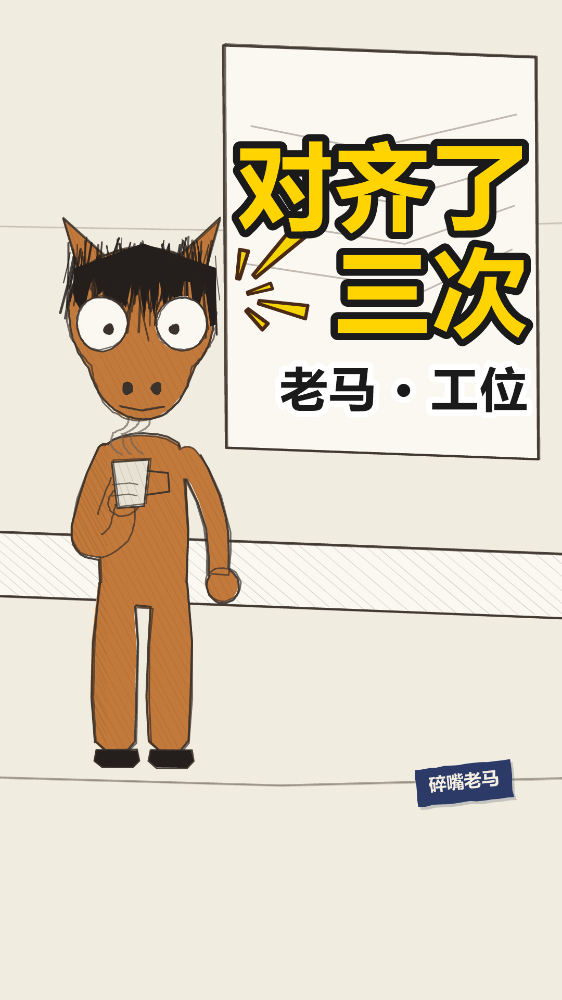


落地方案 · 分镜表 · 发布文案方案.md ↗
老马的第 1851 天 落地方案
带AUTO标记的区块由npm run preview从当前配置重新生成，改了会被覆盖。
其余部分随便改，重新生成时原样保留。
一、稿件定位
- 类型 A 类（对话反转，一句 punch 驱动全片）
- 一句话讲什么 一个所有人天天挂在嘴上、谁也说不清是什么意思的词 —— 而它唯一稳定的产出，是下一次它自己。
- 为什么这么分镜 一镜到底，不切。 全片只有一个人在会议室里说话，切镜会把它变成 PPT（SCRIPT_GUIDE §五：一条切换不超过 3 次，这条用 0）。场景选
meeting-room而不是沿用 001 的office-desk：落点指的东西要从第一秒起就在画面上 —— 那块白板上画着四行潦草的横线，不是字，是「写满了但一个字也认不出来」，那就是「对齐」这件事的样子；观众听到落点时，那块板他已经看了二十多秒。同属工位栏目但换了场景，也是为了第五条别让人以为是重发。 - 不能动的地方
- x: 290 站位：跟 001–004 一模一样。系列里换位置，观众会以为换了个人
- 字幕正好落在白板里，这是撞上的，但要留着。 侧边字幕的列是算出来的（角色框右边 +44，一直吃到画幅右边留 56），实测 x 509–1024；白板画在 430–1034。两者几乎重合 —— 于是每一屏字都排在白板上，看着像他说的话被写到了板上。这条片子讲的就是「写满了一板子，一个字也没用」，比排在空墙上贴题得多。⚠ 但这意味着字幕列和白板是绑死的：动白板的尺寸、动 x、动 sideText 的 GAP/EDGE，都会让字骑在板子边框上（一半在板上一半在墙上，那就成事故了）。改任何一个都要重看一遍 03/05/07 三张场景图
- 三条例子的 padAfter 必须等长（0.3）：§四 要的是「短且等长」，节拍立不住，转折前那半秒就没有对比。三句长短本来就参差，停顿再不齐就成了在讲故事
- 例三之后 closeEyes: 0.9：全片唯一一次闭目，是「受不了」不是眨眼。§五 规定超过 0.5 秒读作忍耐，全片最多一次，且不能用在落点句。⚠ padAfter: 1.05 是为它加长的，改小会让闭目咬进下一句（体检拦）
- 落点末词是「对齐」，不是「一次」：原大纲写的是「对齐的结论是，这件事还需要再对齐一次。」—— 16 字超上限，而且最后一个词是量词，包袱落在倒数第三个字上，正是 §一之一 说的毛病。现在 13 字、末词砸回「对齐」
- 转折里的「三次」不能换成大纲原来的「两个小时」：§一之四 具体的奇数听起来像真数过；更要紧的是「小时」量时长、「次」量回合，回合数才接得上落点的「第三次」
- 落点两句都用 叙平：§四 落点句语速 0.85、不加重音 —— 加重音等于自己先笑了
- 收尾卡那个「冷」：见下
- 收尾卡上必须有东西（endMark，冷 / 右上 / 0.42 / seed 2 / tilt 8）。口径见 老马出片方案 §五：出收尾卡的片子，卡上不能只有一行钩子字 —— 定格去色 ＋ 一行藏青字，两秒七什么都不发生，观众读作「没做完」而不是「克制」
- 是「冷」不是汗、不是灯。 汗＝被自己抓包（稿 1 面具掉下来，稿 4 他就是那七个人之一）；灯＝想通了一件没用的事（稿 3 试出写「随便」那个办法）。这一条两样都不是：他没被抓包，也没想通任何事 —— 他发现的是这件事没有出口，第三次会的产出是第四次会。那一下是后背一紧。颜色也过了那道关：漫符不过 ink()，收尾卡全屏去色，这一个是那一帧上唯一还有颜色的东西；语义上也贴的「点」（无语）和「云」（丧）都是灰调的，挂上去看得见但不亮
二、分镜表
| 时间 | 画面 | 台词 | 音效 / BGM |
|---|---|---|---|
| 0:00.0–0:01.2 | 开场空镜 场景 meeting-room | — | BGM 关 |
| 0:01.3–0:05.3 | 场景 meeting-room 在场 ma 单人镜 | ma：我们公司有个词，我到现在也没弄明白，它叫对齐 | — |
| 0:05.7–0:07.9 | 同上 | ma：开会前，要先对齐一下 | — |
| 0:08.3–0:10.9 | 同上 | ma：开会的时候，全程都在对齐 | — |
| 0:11.3–0:14.0 | 同上 | ma：开完会发个文档，确认刚才对齐了 | — |
| 0:14.1–0:15.0 | 闭目 0.9s 不是眨眼 —— 忍耐 | — | 静音 |
| 0:15.1–0:19.1 | 同上 | ma：上周有件事，一句话能说完，我们对齐了三次 | — |
| 0:19.7–0:23.2 | 同上 | ma：第三次的结论是，下周接着对齐 | — |
| 0:23.2–0:25.2 | 定格去色 + 钩子字幕「老马的第 1851 天」 | — | BGM 骤停 |
三、场景 / 角色 / 节奏
场景 meeting-room
节奏 banter
句内 0.18/0.12s 句间 0.35s 换镜 0.50s
| 角色 | 形象 | 音色 |
|---|---|---|
| ma | horse x=290 | 老马 |
片长 25.25s 6 句 1 个分镜
四、发布文案
发平台时直接抄这一段。
- 标题候选
1. 我们公司有个词，我到现在也没弄明白 ←主选
2. 上周有件事，我们对齐了三次
3. 开会前对齐，开会时对齐，开完会确认对齐了
- 为什么是第 1 个 它就是钩子原句，而且故意不说那个词是什么 —— 悬念留在片子里，点进来第三屏才揭晓。跟封面大字「对齐了三次」唱双簧：标题问是什么，封面答是几次，两边都不剧透落点。第 2 个把转折抖在标题上，点进来就少了一层；第 3 个最像段子，但它是铺垫，标题用掉之后片子里那三句就不新鲜了。
- 副标题
老马 · 工位 第三次的结论，是下周再来一次 - 内容关键词 对齐 / 开会 / 职场黑话 / 无效会议 / 打工人
- 热度关键词 职场黑话 / 互联网黑话 / 开会 / 无效会议 / 打工人日常
- 话题标签 #职场黑话 #开会 #打工人
- 简介
> 我们公司有个词，我到现在也没弄明白。
>
> 开会前要先对齐一下，开会的时候全程都在对齐，开完会还要发个文档，确认刚才对齐了。
> 上周有件事，我们对齐了三次。
- 封面大字
对齐了三次
五、人工核对
- 每一镜的画面和台词对得上（看 index.html 的场景图）
- 音画同步：配音起点落在字幕窗口内
- 站位：
npm run layout零冲突 - 节奏：句间缓冲听着不赶
- 内容风控
laoma-006
out.mp4 1.3s
1.3s健身卡这个东西，我买的时候不当运动，当理财
 5.6s
5.6s一次性存一笔钱进去，然后就不管了
 8.9s
8.9s每个月按时不去，一次也没落下
 11.7s
11.7s一年下来我去了三次，平均一次四百块
 16.4s
16.4s上个月他们打电话来，说卡快到期了，问我续不续
 21.5s
21.5s续吧。我也没打算取
封面 / 开场 / 定格 / 钩子


落地方案 · 分镜表 · 发布文案方案.md ↗
老马的第 1852 天 落地方案
带AUTO标记的区块由npm run preview从当前配置重新生成，改了会被覆盖。
其余部分随便改，重新生成时原样保留。
一、稿件定位
- 类型 A 类（对话反转，一句 punch 驱动全片）
- 一句话讲什么 把一张办了不去的健身卡当成理财产品来讲 —— 讲到最后他续了费，理由是这笔钱他本来也没打算取回来。
- 为什么这么分镜 一镜到底，不切。 全片一个人在出租屋客厅说话，切镜会把它变成 PPT（SCRIPT_GUIDE §五：一条切换不超过 3 次，这条用 0）。场景选
rental-living：落点指的东西要从第一秒起就在画面上 —— 这条讲的是健身卡，那画面上该有的不是健身房，是他这二十几秒实际待着的地方，一张占了右半幅的沙发。没选bedroom：床太直白，等于替观众把话说完；沙发说的是「他没在健身」，不是「他在偷懒」，差一档。 - 不能动的地方
- x: 290 站位：跟 001–005 一模一样。系列里换位置，观众会以为换了个人
- 例一那个「存」不能改字。 它是落点「取」的唯一线索（§一之三 误导必须公平）。换成「交一笔钱」「充一笔钱」，最后那个「取」就落空了
- 三条例子的 padAfter 必须等长（0.3）：§四 要「短且等长」，节拍立不住，转折前那半秒就没有对比
- 例三之后 closeEyes: 0.9：全片唯一一次闭目，是「受不了」不是眨眼。⚠ padAfter: 1.05 是为它加长的，改小会让闭目咬进下一句（体检拦）
- 落点「续吧。」后面那 0.38 秒不能删。 观众在这 0.38 秒里以为落点就是「唉，又续了」，然后才挨到真的那一下。两小句同屏＝提前剧透
- 不要把落点改成「我也不打算去」：那只是重复前面说过的事实。「取」是理财那套词，是新信息，而且悄悄承认了这笔钱他压根没想要回来
- 「三次」「四百块」不能凑成整数：§一之四，奇数和非整数听起来像真数过。一千二这个总数故意不说出口，让观众自己乘 —— 自己算出来的数字比听来的有劲
- 收尾卡那滴汗：见下
- 收尾卡上必须有东西（endMark，汗 / 右上 / 0.5 / seed 2 / tilt 8）。口径见 老马出片方案 §五
- 语义上的第一人选其实是「云」（丧 / 认了），渲出来对比过：云画得清清楚楚，但它整个在灰调里（#D8D2C6 加墨线），去色之后跟整幅画同一个调子，读作画面的一部分，不是「那一帧上唯一还活着的东西」。退回汗也站得住：他刚花二十秒把这张卡算得明明白白，下一秒当着镜头说「续吧」，那一下的尴尬是真的。⚠ 这是第三条用汗的（001 / 003 / 006），再用之前先问一句是不是真的「被自己抓包」 —— 一旦变成缺省就退化成频道 logo
二、分镜表
| 时间 | 画面 | 台词 | 音效 / BGM |
|---|---|---|---|
| 0:00.0–0:01.2 | 开场空镜 场景 rental-living | — | BGM 关 |
| 0:01.3–0:05.2 | 场景 rental-living 在场 ma 单人镜 | ma：健身卡这个东西，我买的时候不当运动，当理财 | — |
| 0:05.6–0:08.5 | 同上 | ma：一次性存一笔钱进去，然后就不管了 | — |
| 0:08.9–0:11.3 | 同上 | ma：每个月按时不去，一次也没落下 | — |
| 0:11.7–0:15.3 | 同上 | ma：一年下来我去了三次，平均一次四百块 | — |
| 0:15.3–0:16.2 | 闭目 0.9s 不是眨眼 —— 忍耐 | — | 静音 |
| 0:16.4–0:20.8 | 同上 | ma：上个月他们打电话来，说卡快到期了，问我续不续 | — |
| 0:21.5–0:23.7 | 同上 | ma：续吧。我也没打算取 | — |
| 0:23.7–0:25.7 | 定格去色 + 钩子字幕「老马的第 1852 天」 | — | BGM 骤停 |
三、场景 / 角色 / 节奏
场景 rental-living
节奏 banter
句内 0.18/0.12s 句间 0.35s 换镜 0.50s
| 角色 | 形象 | 音色 |
|---|---|---|
| ma | horse x=290 | 老马 |
片长 25.74s 6 句 1 个分镜
四、发布文案
发平台时直接抄这一段。
- 标题候选
1. 健身卡这个东西，我买的时候不当运动 ←主选
2. 每个月按时不去，一次也没落下
3. 一年去了三次，平均一次四百块
- 为什么是第 1 个 它是钩子原句，而且故意断在「不当运动」上 —— 那当什么？悬念留给片子，第三屏才揭晓。跟封面大字「按时不去」唱双簧：封面给的是那个错位，标题给的是那个反常识断言，两边都不碰落点。第 2 个最好笑，但它是铺垫，标题用掉之后片子里那句就不新鲜了；第 3 个把最具体的细节先抖出来，等于把观众自己乘一千二的乐趣拿走了。
- 副标题
老马 · 一个人住 续吧，反正也没打算取 - 内容关键词 健身卡 / 办卡不去 / 续费 / 独居 / 沉没成本
- 热度关键词 健身卡 / 健身房 / 办卡 / 打工人日常 / 一个人住
- 话题标签 #健身卡 #一个人生活 #独居
- 简介
> 健身卡这个东西，我买的时候不当运动，当理财。
>
> 一次性存一笔钱进去，然后就不管了。每个月按时不去，一次也没落下。
> 一年下来我去了三次。上个月他们打电话来，说卡快到期了。
- 封面大字
按时不去
五、人工核对
- 每一镜的画面和台词对得上（看 index.html 的场景图）
- 音画同步：配音起点落在字幕窗口内
- 站位：
npm run layout零冲突 - 节奏：句间缓冲听着不赶
- 内容风控
laoma-007
out.mp4 0.0s
0.0s上个月优化以后，报销要过七个人
 3.4s
3.4s优化以前是这样，找我领导签个字，三天
 7.1s
7.1s现在不用找人了，打开系统，自己提交
 10.8s
10.8s系统里有七个节点，每个节点一个人点同意，都是我同事
 16.0s
16.0s上周我报了一笔打车费，一共三十七块，当天就提了
 20.8s
20.8s今天，第十一天
封面 / 开场 / 定格 / 钩子


落地方案 · 分镜表 · 发布文案方案.md ↗
老马的第 1853 天 落地方案
带AUTO标记的区块由npm run preview从当前配置重新生成，改了会被覆盖。
其余部分随便改，重新生成时原样保留。
一、稿件定位
- 类型 A 类（对话反转，一句 punch 驱动全片）
- 一句话讲什么 一个流程被优化了：签字的人从一个变成七个，三天变成十一天 —— 而他从头到尾没说过一句「这不合理」。
- 为什么这么分镜 一镜到底，不切。 全片一个人在工位说话，切镜会把它变成 PPT（SCRIPT_GUIDE §五：一条切换不超过 3 次，这条用 0）。场景选
office-desk：落点指的东西要从第一秒起就在画面上 —— 那台显示器就是「系统」，观众听到「第十一天」的时候，那块屏他已经看了二十多秒。跟 001 同场景但隔了六条，而且 001 讲群消息、这条讲审批流；工位栏目只有两个场景，005 刚用过 meeting-room。 - 出场走档 ③「先出声 · 物件」（
opening: { style: "object-first" }，2026-08-22 换的，这是这一档的第一条片子）。
首帧是系统那张审批单的特写（七个节点排成一列）＋ 一行「报销要过七个人」，其中「七」标朱红；
音轨从 0.0 起，第 1 句一停字就撤，他在那半秒静音里滑进来。片长 27.1 → 25.4。
⚠ 「系统」看着是抽象物件，但 007 讲的那个系统有一个非常具体的样子 —— 一张审批流的单子。
观众不用认出「这是系统」，认出「这是一串要人挨个点的东西」就够了。
- 第 1 句是为这一档重写的。 原来那句「我们公司上个月，优化了一个流程，报销的那个。」
是交代不是断言，而且整句没有一个数字，切不出合格的 frameText（要 ≤8 字、第 1 句的连续子串、含一个数）。
改法照规范 §一 那张表自己给的那一行：「优化以后，报销要过七个人」→ 报销要过七个人。
顺带治了「我们公司」开头那个定位语的毛病 —— 规范说前 8 个字必须是数字或反常，「我在哪」交给画面。
- 不能动的地方
- x: 290 站位：跟 001–006 一模一样
- 例一那个「三天」不能删、不能并屏。 它是落点「第十一天」唯一的尺子（§一之三 误导必须公平）—— 没有这个基准，十一天只是个数字，观众量不出长短
- 例二不能带贬义。 「不用找人了，打开系统，自己提交」听上去必须是个改进，观众跟着以为这是进步，第三条才打得下去
- 三条例子的 padAfter 必须等长（0.3）：§四 要「短且等长」，节拍立不住，转折前那半秒就没有对比
- 例三之后 closeEyes: 0.9：全片唯一一次闭目。⚠ padAfter: 1.05 是为它加长的，改小会让闭目咬进下一句（体检拦）
- 落点「今天，」后面那 0.4 秒不能删。 观众在这 0.4 秒里知道要来一个数，但不知道是几 —— 这半拍就是让他自己先猜一个，然后被那个数打掉
- 不要把落点改成「到今天还没批下来」：那是在解释，而且末词成了「下来」不是那个数。数字自己就是包袱，多一个字都是替观众下判断
- 三天 / 七个 / 三十七块 / 十一天，四个数一个都不能凑成整数：§一之四，奇数和非整数听起来像真数过
- 物件是「系统」（object 字段，出现在第 3、4 两句）。§一之十二 判据：删掉它至少有一句话说不通 ——
删掉系统，「打开系统，自己提交」和「系统里有七个节点」当场垮掉。而且全片一个字都没解释它：
谁做的、为什么七个节点、凭什么去掉一个人要加七个人。物件要有用，不给的是解释。
- 钩子 2 → 回收 6（hookLine / payoffLine）：第 2 句「找我领导签个字，三天」，第 6 句「今天，第十一天」——
量度回收，字面共用一个「天」，那正是被比较的单位。不能写成钩子 1：第 1 句没埋任何具体的东西，跟落点一个实词都不重叠
- ⚠ 2026-08-22 删掉了转折句末尾的「发票是绿的。」。 那是上一版 §一之十二（要「闲置物件」）催生的装饰：
纯外观描述、只出现一次、删掉毫发无伤 —— 新规范点名的反例，体检的 APPEARANCE 正则就是照它写的。别再补回去
- 收尾卡那个问号：见下
- 收尾卡挂问号，不是汗也不是灯。 这一条的第二层就是一个问句：他把账算完了，全程一个判断都没下，那句没说出口的「所以这优化了什么」交给收尾卡 —— 它不是替观众下判断，它就是观众自己的那句话。汗＝被自己抓包（这条他是受害者），灯＝想通了（他什么都没想通），都不对
- ⚠ 挑它的时候顺带修了一条我自己写的规矩：老马出片方案 §五 原来写「漫符必须是那一帧上唯一有颜色的东西」，按那条问号该被排除（它是墨色）。渲出来判据该是落差不是颜色 —— 问号近黑压在浅墙上，明度差比那滴淡蓝的汗还大。真正挂不住的是中间调（点、云）
二、分镜表
| 时间 | 画面 | 台词 | 音效 / BGM |
|---|---|---|---|
| 0:00.0–0:00.0 | 开场空镜 场景 office-desk | — | BGM 关 |
| 0:00.0–0:02.9 | 场景 office-desk 在场 ma 单人镜 | ma：上个月优化以后，报销要过七个人 | — |
| 0:03.4–0:06.7 | 同上 | ma：优化以前是这样，找我领导签个字，三天 | — |
| 0:07.1–0:10.4 | 同上 | ma：现在不用找人了，打开系统，自己提交 | — |
| 0:10.8–0:14.9 | 同上 | ma：系统里有七个节点，每个节点一个人点同意，都是我同事 | — |
| 0:14.9–0:15.8 | 闭目 0.9s 不是眨眼 —— 忍耐 | — | 静音 |
| 0:16.0–0:20.2 | 同上 | ma：上周我报了一笔打车费，一共三十七块，当天就提了 | — |
| 0:20.8–0:22.7 | 同上 | ma：今天，第十一天 | — |
| 0:22.7–0:24.7 | 定格去色 + 钩子字幕「老马的第 1853 天」 | — | BGM 骤停 |
三、场景 / 角色 / 节奏
场景 office-desk
节奏 banter
句内 0.18/0.12s 句间 0.35s 换镜 0.50s
| 角色 | 形象 | 音色 |
|---|---|---|
| ma | horse x=290 | 老马 |
片长 24.72s 6 句 1 个分镜
四、发布文案
发平台时直接抄这一段。
- 标题候选
1. 我们公司上个月优化了一个流程 ←主选
2. 优化以前找领导签个字，三天
3. 一笔三十七块的打车费
- 为什么是第 1 个 它是钩子原句，「优化」这两个字放在标题里自带反讽，而且它不说优化成了什么 —— 悬念全留在片子里。跟封面大字「优化以后」唱双簧：大字问「以后怎么样了」，标题给「上个月优化了」，两边都不碰落点那个数。第 2 个把基准值抖在标题上，观众就有了预期；第 3 个最抓人，但它是转折句，用掉之后片子里那句就不新鲜了。
- 副标题
老马 · 工位 签字的人从一个变成七个 - 内容关键词 优化流程 / 报销 / 审批 / 无效流程 / 打工人
- 热度关键词 报销 / 审批流程 / 优化 / 职场黑话 / 打工人日常
- 话题标签 #报销 #职场 #打工人
- 简介
> 我们公司上个月，优化了一个流程，报销的那个。
>
> 优化以前是这样：找我领导签个字，三天。优化以后不用找人了，打开系统，自己提交。
> 系统里有七个节点，每个节点一个人点同意。
- 封面大字
优化以后
五、人工核对
- 每一镜的画面和台词对得上（看 index.html 的场景图）
- 音画同步：配音起点落在字幕窗口内
- 站位：
npm run layout零冲突 - 节奏：句间缓冲听着不赶
- 内容风控
laoma-008
out.mp4 0.0s
0.0s我在医院等叫号，屏上写着，前面还有二十三位
 4.5s
4.5s它不写还要等多久，只写一个数
 7.9s
7.9s这个数掉得没规律，能十七分钟不动
 11.2s
11.2s边上还有一扇小门，时不时进去一个人，屏上那个数不动
 16.9s
16.9s我在那张椅子上，坐了一个半小时，没敢走开
 21.2s
21.2s屏上少了两位。小门进去了五个
封面 / 开场 / 定格 / 钩子


落地方案 · 分镜表 · 发布文案方案.md ↗
老马的第 1854 天 落地方案
带AUTO标记的区块由npm run preview从当前配置重新生成，改了会被覆盖。
其余部分随便改，重新生成时原样保留。
一、稿件定位
- 类型 A 类（对话反转，一句 punch 驱动全片）
- 一句话讲什么 同一段时间里，正门的队伍挪了两位，旁边那扇没人解释过的小门进去了五个 —— 荒唐的不是等，是这两个数摆在一起的样子。
- 为什么这么分镜 一镜到底，不切。 全片一个人在候诊区说话，切镜会把它变成 PPT（SCRIPT_GUIDE §五：一条切换不超过 3 次，这条用 0）。场景选
hospital：落点指的东西要从第一秒起就在画面上 —— 屏上写死「A047 / 前面还有 23 位」，整条片子一格不动，观众听到「它少一位的时候」，那个 23 他已经盯了二十多秒了。这是稿 4《看哪儿》那块楼层屏的同一手。这个场景第一次用：众目睽睽只有三个场景，003 用掉 elevator，subway 留给「地铁上的让座」。 - 出场走「先出声，后出人」（
opening: { style: "voice-first" }，2026-08-22 换的，这是这一档的第一条片子）。
首帧是场景 ＋ 一行大字「前面还有二十三位」，第 1 句的声音同时起；
他在第 1 句说完那半秒静音里滑进来。台词一个字没改，只是没有了 1.35 秒的开场空镜 —— 片长 28.7 → 27.3。
⚠ 这一条白捡了一层：叫号屏上写着「前面还有 23 位」，大字和屏上那行字说的是同一句。
挑这条开这档的判据：落点靠两个数，而第 1 句里就有一个数摆得出来（二十三）。
009 的钩子是「我们开会有一句话」，抽象句撑不住那么大的字号，那条留在老样子。
- 不能动的地方
- x: 290 站位：跟 001–007 一模一样。系列里角色的站位要固定
- 稿子里的「二十三」必须跟屏上那个数一致。 它不是随手写的数，是观众正看着的那个 —— 改稿改到这个数，得连 horse/scenes.mjs 的 hospital 一起改
- 例二那句「能十七分钟不动，也能一下少两个」不能删、不能并屏。 它是落点唯一的尺子（§一之三 误导必须公平）：先给出「一下少两个」这个上限，观众才量得出「少一位」是最小的那一档，为它鼓掌才荒唐。没有这句，落点只是一个人在傻乐
- 例三不能挖到人身上。 「时不时进去一个人」挖的是这套系统，不是插队的人 —— 老马对世界没有敌意（人设：他不觉得别人坏，只觉得事情就是这样）。写成「有人插队」这条稿就废了
- 三条例子的 padAfter 必须等长（0.3）：§四 要「短且等长」，节拍立不住，转折前那半秒就没有对比
- 例三之后 closeEyes: 0.9：全片唯一一次闭目。⚠ padAfter: 1.05 是为它加长的，改小会让闭目咬进下一句（体检拦）
- 物件是「小门」（object，第 4、6 两句）。§一之十二 判据：删掉小门，第 4 句整句没了、落点塌一半。
全片一个字都没解释它：谁能走？凭什么？—— 这就是「未解释」和「闲置」的区别，它一直在起作用，只是讲的人懒得解释
- 钩子 4 → 回收 6：第 6 句字面复现「小门」。不许写成「那扇门」「旁边那个口子」——
听觉媒介，观众没法回看，换个说法他得先认出「这说的是刚才那个」，那一下的迟疑正好盖住笑点（§一之十四）
- ⚠ 落点改过两版，别往回退。
初版「它少一位的时候，我差点鼓掌」是反应句（§一之十三 判废）。
二版「一个半小时，我看着它掉了一位」是事实了，但跟小门没关系 —— 埋了不收，而且比的是「时长 vs 一位」，那是他一个人的账。
现在这版比的是同一段时间里正门两个、侧门五个，账是这套系统的（§八：制度性荒诞 > 个人倒霉）。
- 落点「屏上少了两位。」后面那 0.4 秒不能删。 观众在这 0.4 秒里以为讲完了（不就是等半天挪两位嘛），然后小门被端出来
- 高亮给「五个」不是「两位」 —— 末词才是笑点（§一之一）
- ⚠ 第 3 句砍掉了「也能一下少两个。」 ——「两」这个量留给落点，一条稿子里同一个量别出现两次（§一之十六）
- ⚠ 转折句末尾的「手里的挂号单是粉色的。」删了。 上一版规范催生的装饰，纯外观描述、只出现一次，而且把那句顶到 25 字，超了 §一之十五 的 24 字上限
- 三条例子的 padAfter 必须等长（0.3）：§四 要「短且等长」，节拍立不住，转折前那半秒就没有对比
- 例三之后 closeEyes: 0.9：全片唯一一次闭目。⚠ padAfter: 1.05 是为它加长的，改小会让闭目咬进下一句（体检拦）
- ⚠ 落点是 2026-08-22 重写过的，别改回去。 初版是「它少一位的时候，我差点鼓掌」——
那是反应不是事实（§一之十三）。「我差点鼓掌」已经替观众把这件事归好了档：「这是个可笑的反应」，
观众只剩点头的份。现在的「一个半小时，我看着它掉了一位」什么都没归档，荒唐感是观众自己从两个数之间量出来的。
量出来的比递到手上的重。
- 「我」留着，动词换了。 §一之十一 第一人称照旧贯穿 —— 分界在动词：「我看着」是事实，「我差点」是反应。
写成光秃秃的「它掉了一位」会把人从画面里抽走
- 「一个半小时」必须跟「一位」挨着出。 它原来在转折句里，那等于提前把尺子给出去，落点只剩一个数没东西可比
- 落点「一个半小时，」后面那 0.4 秒不能删。 观众在这 0.4 秒里知道要来一个量，但猜不到有多小 —— 这半拍是让他自己先估一个
- ⚠ 转折句末尾那句「手里的挂号单是粉色的。」不能删 —— §一之十二 的未解释的具体物件。
它不影响等多久、不是笑点的一环，删掉落点一个字都不用改。挑颜色不挑「折了三折」，是因为
①单据的颜色明摆着是惰性的，没人会当它是伏笔（§一之十二 警告过「别挑跟笑点沾边的」）；②「折」有三读，颜色零多音字风险
- 不要把落点写成「我差点鼓起掌来」：多两个字，末词就从「鼓掌」滑到「起来」了（§一之一 笑点落在最后一个词）
- 二十三 / 十七 / 一个半 / 一位，四个数一个都不能凑成整数：§一之四，奇数和非整数听起来像真数过
- 收尾卡挂汗，不是问也不是灯。 §五 的判据：汗＝落点把他自己也算进去、当场被自己抓包。这条正是 —— 抓包的人是他自己。稿 7 的问号不对（那条他是受害者、站在事外），灯不对（他什么都没想通）。参数照抄不换 seed
- ⚠ 叫号屏的高度是为收尾卡让出来的，不要改回去。 原来 470×230（y 89–319）跟钩子字幕（画死在 y=250，墨迹 268–313、横跨 x 324–756）正好叠在一起，而屏是 DARK、钩子是藏青，字直接看不见。这是 003 那块楼层屏踩过的坑（「场景里靠上的元素跟收尾卡是同一片地」），那次是渲出来才发现，这次是渲之前量的。改成 470×152（底 y≈241）
二、分镜表
| 时间 | 画面 | 台词 | 音效 / BGM |
|---|---|---|---|
| 0:00.0–0:00.0 | 开场空镜 场景 hospital | — | BGM 关 |
| 0:00.0–0:04.0 | 场景 hospital 在场 ma 单人镜 | ma：我在医院等叫号，屏上写着，前面还有二十三位 | — |
| 0:04.5–0:07.5 | 同上 | ma：它不写还要等多久，只写一个数 | — |
| 0:07.9–0:10.8 | 同上 | ma：这个数掉得没规律，能十七分钟不动 | — |
| 0:11.2–0:15.7 | 同上 | ma：边上还有一扇小门，时不时进去一个人，屏上那个数不动 | — |
| 0:15.8–0:16.7 | 闭目 0.9s 不是眨眼 —— 忍耐 | — | 静音 |
| 0:16.9–0:20.5 | 同上 | ma：我在那张椅子上，坐了一个半小时，没敢走开 | — |
| 0:21.2–0:24.6 | 同上 | ma：屏上少了两位。小门进去了五个 | — |
| 0:24.6–0:26.6 | 定格去色 + 钩子字幕「老马的第 1854 天」 | — | BGM 骤停 |
三、场景 / 角色 / 节奏
场景 hospital
节奏 banter
句内 0.18/0.12s 句间 0.35s 换镜 0.50s
| 角色 | 形象 | 音色 |
|---|---|---|
| ma | horse x=290 | 老马 |
片长 26.60s 6 句 1 个分镜
四、发布文案
发平台时直接抄这一段。
- 标题候选
1. 我在医院等叫号，前面还有二十三位 ←主选
2. 这个数能十七分钟不动
3. 我在那张椅子上坐了一个半小时
- 为什么是第 1 个 它是钩子原句，一句话把场合和处境都交代了，而且「二十三位」这个数观众自己会换算成时间 —— 悬念不用写，它自带。跟封面大字「十七分钟」唱双簧：大字给一个没有单位的数，标题给场合，两边都不碰落点。第 2 个把尺子抖在标题上，观众读完标题就有了预期，落点的落差要打折；第 3 个是转折句，用掉之后片子里那句就不新鲜了。
- 副标题
老马 · 众目睽睽 边上那扇小门时不时进去一个人 - 内容关键词 叫号 / 候诊 / 排队 / 医院 / 等
- 热度关键词 医院排队 / 挂号 / 候诊 / 叫号系统 / 打工人日常
- 话题标签 #医院 #排队 #社恐
- 简介
> 我在医院等叫号，屏上写着，前面还有二十三位。
>
> 它不写还要等多久，只写一个数。这个数掉得没规律，能十七分钟不动，也能一下少两个。
> 边上还有一扇小门，时不时进去一个人，屏上那个数不动。
- 封面大字
十七分钟
五、人工核对
- 每一镜的画面和台词对得上（看 index.html 的场景图）
- 音画同步：配音起点落在字幕窗口内
- 站位：
npm run layout零冲突 - 节奏：句间缓冲听着不赶
- 内容风控
laoma-009
out.mp4 1.3s
1.3s我们开会有一句话，谁说了这句，这件事就算有人管了
 6.5s
6.5s原话六个字，这个我拉个群。说完就散会
 10.6s
10.6s群建得特别快，名字带日期，该在的人一个不少
 14.9s
14.9s第一条消息是，群拉好了，后续在这里同步
 19.5s
19.5s我手机里，有四十一个这样的群，一个都没退
 23.6s
23.6s每个群，都还停在第一条
封面 / 开场 / 定格 / 钩子


落地方案 · 分镜表 · 发布文案方案.md ↗
老马的第 1855 天 落地方案
带AUTO标记的区块由npm run preview从当前配置重新生成，改了会被覆盖。
其余部分随便改，重新生成时原样保留。
一、稿件定位
- 类型 A 类（对话反转，一句 punch 驱动全片）
- 一句话讲什么 一句话就能把一件事从「没人管」变成「有人管」，代价是手机里多一个群 —— 三十七个群，没有一个往下走过一步，包括他自己拉的那些。
- 为什么这么分镜 一镜到底，不切。 全片一个人在会议室说话，切镜会把它变成 PPT（SCRIPT_GUIDE §五：一条切换不超过 3 次，这条用 0）。场景选
meeting-room：工位栏目只有两个场景，007 刚用过 office-desk，隔两条再用太近（001 → 007 隔了六条），meeting-room 上一次是 005，隔四条。
⚠ 这条的场景不当道具，是有意的，跟 008 正好相反。 008 的叫号屏是落点指着的东西（「让场景替台词说话」，老马出片方案 §六之二）；这条落点指的是手机里的群，那东西摆不进画面 —— 硬摆一只手机就成了图解台词（§五：「画面出现了台词已经说过的东西，等于抢戏」）。白板只提供一个「他刚开完会」的底。选哪种做法，看落点指的东西能不能真的进画面。
- 不能动的地方
- x: 290 站位：跟 001–008 一模一样。系列里角色的站位要固定
- 例二（「群建得特别快，名字带日期，该在的人一个不少」）不能带贬义。 群确实建得又快又齐，这一句得先立得住，观众才会跟着以为这是执行力，例三和落点才打得下去 —— 跟 007 的「优化以后不用找人了」是同一处机关
- ⚠ 「一个不少」不能改回「一个不落」。 「落」在这儿读 là，Edge 默认读 luò，而 tone-check 查不了它 —— là 和 luò 同为四声，那个脚本比的是基频曲线，两个读音在它眼里一模一样。量不了的音就别用（正音层规矩：同音字替身）
- 例三那句群公告要照抄，不能改成人话。 「群拉好了，后续在这里同步」原样就是群公告体，改顺了反而假；而且落点唯一的凭据就是这句里那个没人接的「后续」（§一之三 误导必须公平）
- 物件是「群」（object，出现在第 2、3、4、5、6 五句）。§一之十二：删掉它整条稿子全塌。
全片没有一个字解释它：为什么一件事必须靠拉群才算有人管？没人说。物件不一定是实物 —— 一个动作也算
- 钩子 4 → 回收 6：第 4 句「第一条消息是，群拉好了，后续在这里同步」，第 6 句「都还停在第一条」——
同一个词，一个字都没换（§一之十四 要求字面复现）
- ⚠ 「四十一」不能改回「三十七」。 007 的转折句是「一共三十七块」，两条只隔两期 ——
同一个数出现两次是最明显的模板痕迹（§一之十六）。这是数字账本 horse/used-numbers.json 报出来的，
不是眼睛看出来的。改这个数要连封面副标题一起改：封面不在 lines 里，账本查不到它
- 转折句的「一个都没退」不能删。 没有它，落点就是在数落别人；有了它，三十七个群里他自己也一言未发（§一之十一：写他们是嘲笑，写我才是自嘲）
- 落点的「还」不能删。 「都停在第一条」是静态描述，「都还停在第一条」才有「到今天为止」的时间感
- 三条例子的 padAfter 必须等长（0.3）：§四 要「短且等长」，节拍立不住，转折前那半秒就没有对比
- 例三之后 closeEyes: 0.9：全片唯一一次闭目。⚠ padAfter: 1.05 是为它加长的，改小会让闭目咬进下一句（体检拦）
- 落点「每个群，」后面那 0.4 秒不能删。 观众在这 0.4 秒里知道要来一个统一的结论，但猜不到是哪一条
- 六个字 / 三十七 / 第一条，三个数一个都不能凑成整数：§一之四，奇数和具体数听起来像真数过
- 收尾卡挂灯，不是汗。 §五：想通了一件没用的事用「灯」，自带反讽 —— 他数完三十七个群，得出的结论对生活一点用都没有。汗＝当场被自己抓包（这条他是在盘账，不是被抓；而且前八条已经用了四次汗），问＝账没算清（007 用过，这条账是清的），冷＝僵住发凉（005 用过，这条的底色是发现不是受惊）。参数照抄 004 不换 seed
二、分镜表
| 时间 | 画面 | 台词 | 音效 / BGM |
|---|---|---|---|
| 0:00.0–0:01.2 | 开场空镜 场景 meeting-room | — | BGM 关 |
| 0:01.3–0:06.1 | 场景 meeting-room 在场 ma 单人镜 | ma：我们开会有一句话，谁说了这句，这件事就算有人管了 | — |
| 0:06.5–0:10.2 | 同上 | ma：原话六个字，这个我拉个群。说完就散会 | — |
| 0:10.6–0:14.5 | 同上 | ma：群建得特别快，名字带日期，该在的人一个不少 | — |
| 0:14.9–0:18.3 | 同上 | ma：第一条消息是，群拉好了，后续在这里同步 | — |
| 0:18.4–0:19.3 | 闭目 0.9s 不是眨眼 —— 忍耐 | — | 静音 |
| 0:19.5–0:22.9 | 同上 | ma：我手机里，有四十一个这样的群，一个都没退 | — |
| 0:23.6–0:26.4 | 同上 | ma：每个群，都还停在第一条 | — |
| 0:26.4–0:28.4 | 定格去色 + 钩子字幕「老马的第 1855 天」 | — | BGM 骤停 |
三、场景 / 角色 / 节奏
场景 meeting-room
节奏 banter
句内 0.18/0.12s 句间 0.35s 换镜 0.50s
| 角色 | 形象 | 音色 |
|---|---|---|
| ma | horse x=290 | 老马 |
片长 28.38s 6 句 1 个分镜
四、发布文案
发平台时直接抄这一段。
- 标题候选
1. 我们开会有一句话，说完这件事就算有人管了 ←主选
2. 我手机里有三十七个群
3. 原话六个字，这个我拉个群
- 为什么是第 1 个 它是钩子原句，先给效果不给那句话，悬念全留在片子里 —— 而观众里凡是坐过班的，读到这儿脑子里已经在猜是哪一句了，点进来是为了对答案。跟封面大字「我拉个群」唱双簧：大字把那句话抖出来，标题给它的效力，两边都不碰落点。第 2 个把三十七这个数抖在标题上，转折句就不新鲜了；第 3 个最像那句原话，但它是揭晓句，用掉之后片子里那一下就没了。
- 副标题
老马 · 工位 群建得特别快，名字带日期 - 内容关键词 拉群 / 开会 / 微信群 / 工作群 / 打工人
- 热度关键词 工作群 / 开会 / 微信群 / 职场黑话 / 打工人日常
- 话题标签 #工作群 #开会 #职场
- 简介
> 我们开会有一句话，谁说了这句，这件事就算有人管了。
>
> 原话六个字：这个我拉个群。说完就散会。
> 群建得特别快，名字带日期，该在的人一个不少。第一条消息是「群拉好了，后续在这里同步」。
- 封面大字
我拉个群（副标题四十一个，跟台词同步改过）
五、人工核对
- 每一镜的画面和台词对得上（看 index.html 的场景图）
- 音画同步：配音起点落在字幕窗口内
- 站位：
npm run layout零冲突 - 节奏：句间缓冲听着不赶
- 内容风控
laoma-017
out.mp4 0.0s
0.0s我这人有个毛病，别人说啥我都点头
 3.5s
3.5s点头点多了，别人以为我同意
 6.0s
6.0s我没同意，我就是脖子累了想动动
 8.9s
8.9s后来我学会了不点头，别人又说我有意见
 13.8s
13.8s我确实有意见。但我不说
 16.0s
16.0s说了就得解释，解释了就得吵，吵完了还得一起吃饭
 22.2s
22.2s不过这样也挺好，脖子省了，饭也照吃
封面 / 开场 / 定格 / 钩子
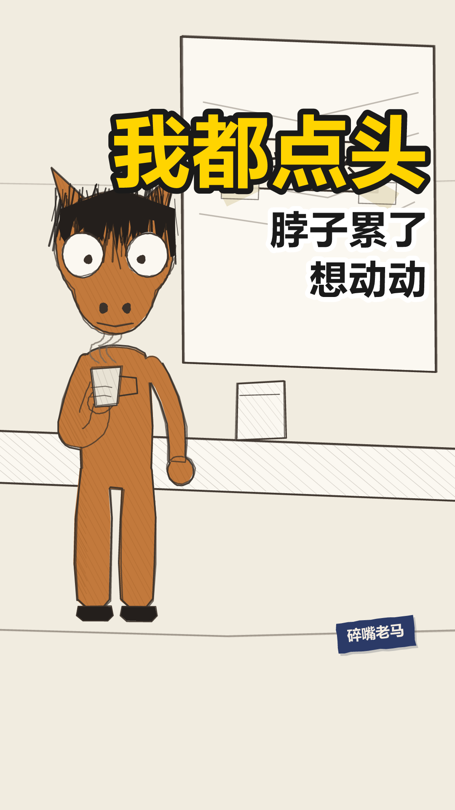


落地方案 · 分镜表 · 发布文案方案.md ↗
laoma-017 落地方案
带AUTO标记的区块由npm run preview从当前配置重新生成，改了会被覆盖。
其余部分随便改，重新生成时原样保留。
一、稿件定位
- 类型 A 类（管线上的时间轴结构）／体裁：累积式（
format: "cumulative"，第一条） - 一句话讲什么 他没有立场问题，他有脖子问题 —— 点头被读成同意，不点头被读成有意见，两头都不是他的意思，最后他两头都不解释了。
- 为什么这么分镜 一个人从头说到尾，没有站位变化，所以不切镜：节拍全部交给字幕分屏和两处「留一拍」。累积式的密度在排比那一句里（三小句一句一屏），苦味在沉底前那一拍上。
- 不能动的地方
- 两处 beatPause（第 4、6 句）：一处是「两头堵」成立的那一下，一处是沉底句的助跑。删了这条片子会被读平。
- 闭目 0.9 秒（第 4 句）：全片唯一一次，靠那一拍留白才塞得下；padAfter 调小就会咬进下一句。
- 第 6 句的三小句必须一句一屏：合成一屏，排比就塌成一段话，累积感全丢。
- 落点第 1 屏必须逐字是「不过这样也挺好」，gap: 0.5 是给那一拍腾的位置 —— 签名屏靠逐字相同长成记忆点。
- 不出收尾卡、不带日子牌：累积式不占老马那条时间轴。
二、分镜表
| 时间 | 画面 | 台词 | 音效 / BGM |
|---|---|---|---|
| 0:00.0–0:00.0 | 开场空镜 场景 meeting-room | — | BGM 关 |
| 0:00.0–0:03.1 | 场景 meeting-room 在场 ma 单人镜立人设。一句话立起来「我是个点头的人」——不解释为什么，也不评价好坏。 | ma：我这人有个毛病，别人说啥我都点头 | — |
| 0:03.5–0:05.6 | 同上 第一层错位：动作是省事，收到的是承诺。他自己还没意识到。 | ma：点头点多了，别人以为我同意 | — |
| 0:06.0–0:08.5 | 同上 自己拆掉。钩子埋在这儿——「脖子」第一次出现，落点要拿它结账。 | ma：我没同意，我就是脖子累了想动动 | — |
| 0:08.9–0:12.6 | 同上 两头堵成立的那一下：点头不对，不点头也不对。留一拍 ＋ 闭目 0.9 就用在这儿——全片唯一一次闭目，读作「认命」，不是眨眼。 | ma：后来我学会了不点头，别人又说我有意见 | — |
| 0:12.6–0:13.5 | 闭目 0.9s 不是眨眼 —— 忍耐 | — | 静音 |
| 0:13.8–0:15.6 | 同上 话锋转了：前面都是别人怎么看他，从这句起是他自己。全片唯一一次扭头。 | ma：我确实有意见。但我不说 | — |
| 0:16.0–0:20.7 | 同上 累积层的密度所在：说→解释→吵→吃饭，一环扣一环。三小句必须一句一屏（累积式字幕 §1），合成一屏排比就塌成一段话。说完留一拍，那一拍是沉底句的助跑。 | ma：说了就得解释，解释了就得吵，吵完了还得一起吃饭 | — |
| 0:22.2–0:26.3 | 同上 沉底。往下沉半寸，不往上扬——不翻身、不励志。签名屏「不过这样也挺好」自成一屏，停一拍再出后半句。「脖子」在这儿结账，「饭」接住上一句。 | ma：不过这样也挺好，脖子省了，饭也照吃 | — |
| 0:26.7–0:28.7 | 定格去色 不出收尾卡 | — | BGM 骤停 |
三、场景 / 角色 / 节奏
场景 meeting-room
节奏 standup-fast
句内 0.25/0.15s 句间 0.40s 换镜 0.90s
| 角色 | 形象 | 音色 |
|---|---|---|
| ma | horse x=290 | 老马 |
片长 28.66s 7 句 1 个分镜
四、发布文案
发平台时直接抄这一段。
- 标题候选
1. 别人说啥我都点头，点多了就成了同意 ←主选
2. 我不是同意，我是脖子累了
3. 后来我学会了不点头，他们说我有意见
- 内容关键词 点头 / 开会 / 脖子 / 有意见 / 不解释
- 热度关键词 职场 / 开会 / 同事 / 社交 / 附和
- 话题标签 #开会 #点头 #职场日常
- 简介
> 我这人有个毛病，别人说啥我都点头。
>
> 点头点多了，别人以为我同意。我没同意，我就是脖子累了想动动。
> 后来我学会了不点头，别人又说我有意见。
- 封面大字
我都点头
五、人工核对
- 每一镜的画面和台词对得上（看 index.html 的场景图）
- 音画同步：配音起点落在字幕窗口内
- 站位：
npm run layout零冲突 - 节奏：句间缓冲听着不赶
- 内容风控
laoma-018
out.mp4 0.0s
0.0s早上第一个到，晚上最后一个走
 2.6s
2.6s中间那八个小时干了啥，我也说不太清
 6.1s
6.1s开会我从来不说话。不是没意见，是说了也白说
 9.9s
9.9s说了也白说这话我也不敢说，怕说了更白说
 15.0s
15.0s方案我改了六版，最后用的第一版
 17.6s
17.6s领导说，还是最初的感觉最好
 20.3s
20.3s我说是啊。心里想的是，那你倒是早说啊
 25.3s
25.3s不过这样也挺好，至少我知道了，我第一版就挺行
封面 / 开场 / 定格 / 钩子


落地方案 · 分镜表 · 发布文案方案.md ↗
laoma-018 落地方案
带AUTO标记的区块由npm run preview从当前配置重新生成，改了会被覆盖。
其余部分随便改，重新生成时原样保留。
一、稿件定位
- 类型 A 类（管线上的时间轴结构）／体裁：累积式（
format: "cumulative"） - 一句话讲什么 他把「早到晚走」当成人设立起来，然后一层一层自己拆掉：话不敢说、方案白改，最后连委屈都不提了，只留一句自我安慰。
- 为什么这么分镜 一个人从头说到尾，不切镜。节拍全交给字幕分屏和两处「留一拍」——第 4 句（绕口令的顶点）和第 7 句（沉底前那一拍）。
- 不能动的地方
- 第 7 句的 gap: 0.45：「我说是啊。」和「心里想的是」之间那个空，是全片最响的地方。并成一屏就没有嘴上和心里的落差了。
- 第 6 句一屏不拆：「领导说，」单独成屏只有半秒多，读不完——字幕规范的 0.6 秒硬底线就是拦这个的。
- 闭目 0.9 秒（第 4 句）：全片唯一一次，靠那一拍留白才塞得下。
- 落点第 1 屏逐字「不过这样也挺好」，gap: 0.5 是给那一拍腾的位置。
- 不出收尾卡、不带日子牌：累积式不占老马那条时间轴。
二、分镜表
| 时间 | 画面 | 台词 | 音效 / BGM |
|---|---|---|---|
| 0:00.0–0:00.0 | 开场空镜 场景 office-desk | — | BGM 关 |
| 0:00.0–0:02.2 | 场景 office-desk 在场 ma 单人镜立人设：一个「勤勉」的人。两小句同构，一句一屏，重复要看得见。 | ma：早上第一个到，晚上最后一个走 | — |
| 0:02.6–0:05.7 | 同上 自己拆掉：勤勉是时间上的，中间那段是空的。这一句一出来，上一句的人设就塌了。 | ma：中间那八个小时干了啥，我也说不太清 | — |
| 0:06.1–0:09.5 | 同上 累积①：不说话的理由。三小句一句一屏，第三小句「说了也白说」是下一句的引信。 | ma：开会我从来不说话。不是没意见，是说了也白说 | — |
| 0:09.9–0:13.8 | 同上 累积②：绕口令式的自我套娃，全片密度最高的一句。说完留一拍 ＋ 闭目 0.9——全片唯一一次闭目，读作认命，不是眨眼。 | ma：说了也白说这话我也不敢说，怕说了更白说 | — |
| 0:13.9–0:14.8 | 闭目 0.9s 不是眨眼 —— 忍耐 | — | 静音 |
| 0:15.0–0:17.2 | 同上 累积③：从「说话」换到「干活」，同一个机制换个地方再来一次。钩子埋在这儿——「第一版」落点要拿它结账。 | ma：方案我改了六版，最后用的第一版 | — |
| 0:17.6–0:19.9 | 同上 话锋转了：前面是他自己怎么熬，这一句是别人一句话把六版一笔勾销。全片唯一一次扭头。一屏，不拆——「领导说」单独一屏只有半秒，读不完。 | ma：领导说，还是最初的感觉最好 | — |
| 0:20.3–0:23.8 | 同上 嘴上和心里分两屏，中间空 0.45 秒——那个空就是全片最响的地方。说完留一拍，给沉底句助跑。 | ma：我说是啊。心里想的是，那你倒是早说啊 | — |
| 0:25.3–0:29.7 | 同上 沉底：往下沉半寸，不往上扬。签名屏「不过这样也挺好」自成一屏、停一拍，再一层一层落到「我第一版就挺行」——最后那个词才是笑点。「第一版」在这儿结账。 | ma：不过这样也挺好，至少我知道了，我第一版就挺行 | — |
| 0:30.0–0:32.0 | 定格去色 不出收尾卡 | — | BGM 骤停 |
三、场景 / 角色 / 节奏
场景 office-desk
节奏 standup-fast
句内 0.25/0.15s 句间 0.40s 换镜 0.90s
| 角色 | 形象 | 音色 |
|---|---|---|
| ma | horse x=290 | 老马 |
片长 32.01s 8 句 1 个分镜
四、发布文案
发平台时直接抄这一段。
- 标题候选
1. 开会我从来不说话，不是没意见，是说了也白说 ←主选
2. 方案改了六版，最后用的第一版
3. 早上第一个到，晚上最后一个走，中间八小时说不清
- 内容关键词 开会 / 不说话 / 方案 / 改版 / 领导
- 热度关键词 职场 / 加班 / 开会 / 改方案 / 打工人
- 话题标签 #开会 #改方案 #职场日常
- 简介
> 早上第一个到，晚上最后一个走。中间那八个小时干了啥，我也说不太清。
>
> 开会我从来不说话。不是没意见，是说了也白说。
> 方案我改了六版，最后用的第一版。
- 封面大字
说了也白说
五、人工核对
- 每一镜的画面和台词对得上（看 index.html 的场景图）
- 音画同步：配音起点落在字幕窗口内
- 站位：
npm run layout零冲突 - 节奏：句间缓冲听着不赶
- 内容风控
老牛走的那天
laoma-long-001
片长 5:48
82 句 · 8 章
ma=老马 niu=老牛
长片是第三条线：横屏、五分钟、全片说破一次，
不进段子那棵排期树（那棵树按天数号、一周三档，长片一条都不适用），
所以它没有日子牌、没有收尾卡，左边目录上也不带排期状态。
规矩见 joke-video/horse/长片_出片方案.md ／ 长片_稿件规范.md。
out.mp4横版验收
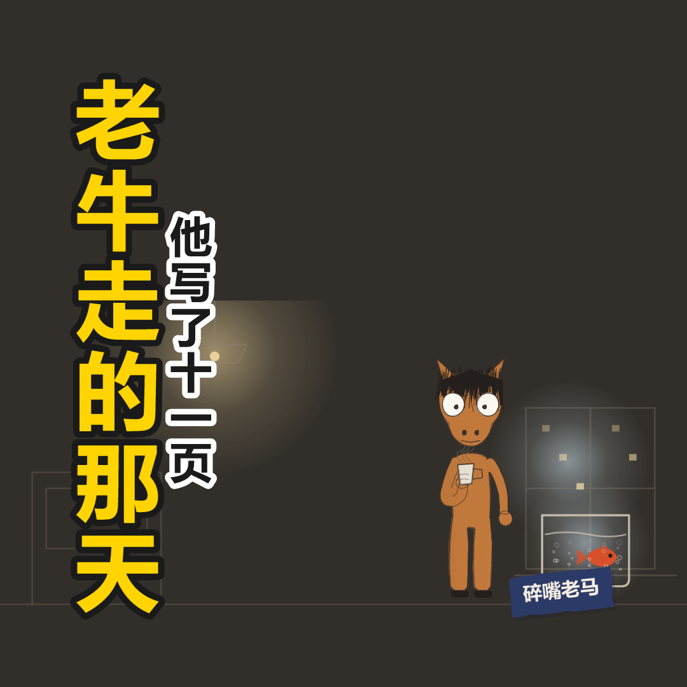
方版验收
laoma-long-001-试听-环境音.mp3章
| 章 | 起 | 时长 | 句 | 头一句 |
|---|---|---|---|---|
| 一、早上 | 0:00 | 29s | 6 句 | 老牛的桌子是早上七点半空的。 |
| 二、老牛是谁 | 0:29 | 41s | 10 句 | 老牛在这儿待了六年。 |
| 三、他为什么走 | 1:10 | 41s | 7 句 | 他去了一个更小的地方。工资低了点，通勤短了四十分钟。他老家在那边，他… |
| 四、中午 | 1:51 | 43s | 9 句 | 中午组里请他吃饭。十二个人一张大桌子，点了十四个菜，吃完剩七个。 |
| 五、下午 | 2:35 | 41s | 10 句 | 下午他还在干活。 |
| 六、傍晚 | 3:16 | 79s | 24 句 | 六点，我送他到楼下。天还亮着，风挺大。 |
| 七、然后 | 4:34 | 23s | 6 句 | 他走了，往地铁站那边。走了几步又停住，把手里的鱼缸放地上，回头冲我招… |
| 八、晚上 | 4:58 | 50s | 10 句 | 我把鱼缸拎回工位，搁在窗台上。 |
发布文案发布文案.md ↗
《老牛走的那天》 · 发布文案
这份是复制源。 每个代码块整块选中、直接粘到平台的输入框里，中间不用挑。
取舍的理由在 [horse/长片_出片方案.md](../../../../joke-video/horse/长片_出片方案.md) §七，不放这儿。
⚠ 长片这一份是手写的，不是 yiye-publish.ts 生成的 ——
那个脚本是按短片的字段做的（收尾卡、日子牌、逐句稿），长片没有那几样。
改稿之后这份要手动跟一遍。
成片：out.mp4 5 分 48 秒 1280×720
标题
```
他在这儿待了六年，走那天留下一条鱼
```
备选（换平台或者数据不好时替）：
```
老牛走的那天
```
```
我一直以为他傻
```
简介
```
老牛在这家公司待了六年。没升过职，也没谁夸过他。
他走的那天还是七点半到的。最后半天写了份交接文档，十一页。
临走把养了四年的鱼留给了我。
—— 关于老马 ——
每天嘀咕一句，说完就走。不愤怒，只是累到平静。
长片一月一条，短片周更。
```
章节（YouTube 描述里贴这一段，B 站分 P 点也用它）
这几个时刻汇总页也有一份（projects/老马/index.html 的「章」表，从时间轴现算的）。
改稿之后两边要对上 —— 以页面那份为准，它跟着配音时长走，这一份是手抄的。
时刻一律向下取整：章节标记只能早不能晚，进位之后跳过去，那一章的头一个字已经过去了。
```
0:00 早上
0:29 老牛是谁
1:10 他为什么走
1:51 中午
2:35 下午
3:16 傍晚
4:34 然后
4:58 晚上
```
字幕
laoma-long-001-试听.srt（112 条）—— npm run audio 顺手出的，
跟 out.mp4 同一条时间轴、没有前置偏移，直接当软字幕传上去就行，不用平移。
YouTube 走「字幕 → 上传文件」；B 站走「字幕 → 导入」。
⚠ 改稿之后要重跑 npm run audio，这一份不会自己跟着变。
关键词
每个词自带 #，整块粘进去就是话题，不用人工逐个补井号
（跟短片那条线同一条规矩，见 yiye-publish.ts 的 hashify）。
前五个是内容本身，后面几个是观众会搜的。
```
#离职 #同事 #交接 #六年 #鱼缸 #职场 #打工人 #中年 #原创动画 #老马
```
标签
⚠ B 站 TAG 框和 YouTube 的 tags 字段不吃 # —— 所以同一批词还要一份不带井号的。
词是同一批，只是渲两次，别当成两组词各自维护。
B 站 TAG（≤10 个，第一个进推荐权重最高）：
```
原创动画 职场 离职 打工人 手绘 短片 老马 中年 治愈 故事
```
置顶评论
老马的语气，不解释视频、不共情、不谢观看（BASE §五之三 那四条硬规则，长片照用）。
```
那条鱼还活着。
```
中心思想（落点）
不要写进简介。 长片的支点是说破那一次（4:00 起那七句），
简介里提前说出来，等于把观众来听的那一下先讲了。
这一栏是给写稿的人回头核的：这几句值不值得被人截下来。
```
我那不叫看得开。
我什么都不干，我就永远不用知道自己到底行不行。
我哪明白啊。我就是……我就是没敢试。
```
老牛的回答（全片唯一一次有人接住他）：
```
那你现在知道了。
```
封面
✅ 出了，一次四张：
| 文件 | 传哪儿 |
|---|---|
cover/laoma-long-001-16x9.png | 1280×720 —— YouTube／B站 |
cover/laoma-long-001-1x1.png | 1080×1080 —— 微信那一路（公众号列表、视频号）。16:9 传过去两边被裁，裁掉的正好是左边那块标题 |
-210.png ／ -200.png | 验收图，两张都要看 —— 缩到那么大读不出来的，大图上再好看也没用 |
选的是夜景那一帧（原来备选三帧里的第二条）：工位 · 夜，老马一个人站在窗边，
窗台上那缸鱼在他右手边 —— 全片最后一个视觉事实，老牛已经走了。
大字排左、角色和鱼在右，不剧透说破段。
| 大字 | 老牛走的那天（断成「老牛走的／那天」） |
| 副标 | 他写了十一页 |
⚠ 这条大字跟正标题有词重叠（「走那天」），是知情的。
§一 铁律 2「封面大字和标题不能重复」这一条就蹭了 ——
用户 2026-08-26 定：能夺眼球优先。别当成疏漏改回去。
换掉上一版「他走以后」的理由是指代：封面上只站着一个角色（老马），
而大字和副标里两个「他」都是老牛 —— 观众会把「他」认成画面里这匹马。
「他走以后」还有个自解的矛盾（他走了、画面里却站着一个）撑着，
「他写了十一页」没有，会被直接读成这匹马写的。具名一次，副标那个「他」就有主了。
备选（换平台或者数据不好时替，都不碰说破段）：
```
最后半天
```
```
我以为他傻
```
重出一版：
```
cd joke-video
npm run laoma:long-cover -- jokes/laoma-long-001.json
npm run laoma:long-cover -- jokes/laoma-long-001.json --title 最后半天 --sub 他写了十一页
```
⚠ 大字和副标写在稿件 json 的 cover 块里，由 tools/long-parse.mts 写 ——
别手改 json，改了下一次重跑就没了。要换成常用的那一版，改 long-parse.mts。
版式规范见 [封面设计规范-COVER.md](../../../../joke-video/封面设计规范-COVER.md) §九
（不是 §七，§七 是竖版 1080×1920 那一档；这一档只借它的字，版面自己量）。